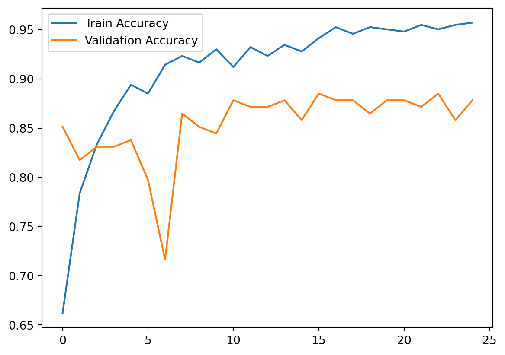

Primary Questions
What distinguishes selected images from not_selected images?
Can a machine learning model predict whether an image will be selected based on its attributes?
I’ve always been interested in how image selection works for top media outlets like CNN, AP, and TIME. Specifically, I wanted to explore what makes an image more likely to be chosen for publication. By analyzing a dataset of images that were selected versus not selected, I aimed to identify key patterns that influence selection.
What distinguishes selected images from not_selected images?
Can a machine learning model predict whether an image will be selected based on its attributes?
The dataset consists of about 900 images, split into selected and not_selected categories. The images were preprocessed (resized and normalized) before being used to train a CNN model in Keras. Below is the code used to load and preprocess the data for analysis:
Here the code is scraping the images from CNN, TIME, and AP for what would go into my “selected” phtoto category.
import os
import requests
from bs4 import BeautifulSoup
from urllib.parse import urljoin
import shutil
import numpy as np
# Saving the Images
IMAGE_DIR = "/Users/mattgutierrez80/Desktop/UDA_Notes/images/selected"
if not os.path.exists(IMAGE_DIR):
os.makedirs(IMAGE_DIR)
# Target Websites
websites = {
"cnn": "https://www.cnn.com/interactive/2024/specials/year-in-pictures/",
"ap": "https://apnews.com/associated-press-100-photos-of-2024-an-epic-catalog-of-humanity",
"time": "https://time.com/7176286/top-100-photos-2024/"
}
def download_image(img_url, folder, img_name):
response = requests.get(img_url, stream=True)
if response.status_code == 200:
img_path = os.path.join(folder, img_name)
with open(img_path, 'wb') as file:
shutil.copyfileobj(response.raw, file)
print(f"Downloaded: {img_name}")
else:
print(f"Failed to download: {img_url}")
# Function to scrape images from a website
def scrape_images(site_name, url):
print(f"Scraping images from {site_name}...")
response = requests.get(url)
soup = BeautifulSoup(response.text, 'html.parser')
img_tags = soup.find_all('img')
img_urls = [urljoin(url, img['src']) for img in img_tags if 'src' in img.attrs]
for i, img_url in enumerate(img_urls):
download_image(img_url, IMAGE_DIR, f"{site_name}_{i}.jpg")
# Scraping websites
for site, link in websites.items():
np.random.uniform(.1, .25, 1)
scrape_images(site, link)
print("Image scraping completed!")Scraping images from cnn...
Downloaded: cnn_0.jpg
Downloaded: cnn_1.jpg
Downloaded: cnn_2.jpg
Downloaded: cnn_3.jpg
Downloaded: cnn_4.jpg
Downloaded: cnn_5.jpg
Downloaded: cnn_6.jpg
Downloaded: cnn_7.jpg
Downloaded: cnn_8.jpg
Downloaded: cnn_9.jpg
Downloaded: cnn_10.jpg
Downloaded: cnn_11.jpg
Downloaded: cnn_12.jpg
Downloaded: cnn_13.jpg
Downloaded: cnn_14.jpg
Downloaded: cnn_15.jpg
Downloaded: cnn_16.jpg
Downloaded: cnn_17.jpg
Downloaded: cnn_18.jpg
Downloaded: cnn_19.jpg
Downloaded: cnn_20.jpg
Downloaded: cnn_21.jpg
Downloaded: cnn_22.jpg
Downloaded: cnn_23.jpg
Downloaded: cnn_24.jpg
Downloaded: cnn_25.jpg
Downloaded: cnn_26.jpg
Downloaded: cnn_27.jpg
Downloaded: cnn_28.jpg
Downloaded: cnn_29.jpg
Downloaded: cnn_30.jpg
Downloaded: cnn_31.jpg
Downloaded: cnn_32.jpg
Downloaded: cnn_33.jpg
Downloaded: cnn_34.jpg
Downloaded: cnn_35.jpg
Downloaded: cnn_36.jpg
Downloaded: cnn_37.jpg
Downloaded: cnn_38.jpg
Downloaded: cnn_39.jpg
Downloaded: cnn_40.jpg
Downloaded: cnn_41.jpg
Downloaded: cnn_42.jpg
Downloaded: cnn_43.jpg
Downloaded: cnn_44.jpg
Downloaded: cnn_45.jpg
Downloaded: cnn_46.jpg
Downloaded: cnn_47.jpg
Downloaded: cnn_48.jpg
Downloaded: cnn_49.jpg
Downloaded: cnn_50.jpg
Downloaded: cnn_51.jpg
Downloaded: cnn_52.jpg
Downloaded: cnn_53.jpg
Downloaded: cnn_54.jpg
Downloaded: cnn_55.jpg
Downloaded: cnn_56.jpg
Downloaded: cnn_57.jpg
Downloaded: cnn_58.jpg
Downloaded: cnn_59.jpg
Downloaded: cnn_60.jpg
Downloaded: cnn_61.jpg
Downloaded: cnn_62.jpg
Downloaded: cnn_63.jpg
Downloaded: cnn_64.jpg
Downloaded: cnn_65.jpg
Downloaded: cnn_66.jpg
Downloaded: cnn_67.jpg
Downloaded: cnn_68.jpg
Downloaded: cnn_69.jpg
Downloaded: cnn_70.jpg
Downloaded: cnn_71.jpg
Downloaded: cnn_72.jpg
Downloaded: cnn_73.jpg
Downloaded: cnn_74.jpg
Downloaded: cnn_75.jpg
Downloaded: cnn_76.jpg
Downloaded: cnn_77.jpg
Downloaded: cnn_78.jpg
Downloaded: cnn_79.jpg
Downloaded: cnn_80.jpg
Downloaded: cnn_81.jpg
Downloaded: cnn_82.jpg
Downloaded: cnn_83.jpg
Downloaded: cnn_84.jpg
Downloaded: cnn_85.jpg
Downloaded: cnn_86.jpg
Downloaded: cnn_87.jpg
Downloaded: cnn_88.jpg
Downloaded: cnn_89.jpg
Downloaded: cnn_90.jpg
Downloaded: cnn_91.jpg
Downloaded: cnn_92.jpg
Downloaded: cnn_93.jpg
Downloaded: cnn_94.jpg
Downloaded: cnn_95.jpg
Downloaded: cnn_96.jpg
Downloaded: cnn_97.jpg
Downloaded: cnn_98.jpg
Downloaded: cnn_99.jpg
Downloaded: cnn_100.jpg
Downloaded: cnn_101.jpg
Downloaded: cnn_102.jpg
Downloaded: cnn_103.jpg
Downloaded: cnn_104.jpg
Downloaded: cnn_105.jpg
Downloaded: cnn_106.jpg
Downloaded: cnn_107.jpg
Downloaded: cnn_108.jpg
Downloaded: cnn_109.jpg
Downloaded: cnn_110.jpg
Downloaded: cnn_111.jpg
Downloaded: cnn_112.jpg
Downloaded: cnn_113.jpg
Downloaded: cnn_114.jpg
Downloaded: cnn_115.jpg
Downloaded: cnn_116.jpg
Downloaded: cnn_117.jpg
Downloaded: cnn_118.jpg
Downloaded: cnn_119.jpg
Downloaded: cnn_120.jpg
Downloaded: cnn_121.jpg
Downloaded: cnn_122.jpg
Downloaded: cnn_123.jpg
Downloaded: cnn_124.jpg
Downloaded: cnn_125.jpg
Downloaded: cnn_126.jpg
Downloaded: cnn_127.jpg
Downloaded: cnn_128.jpg
Downloaded: cnn_129.jpg
Downloaded: cnn_130.jpg
Downloaded: cnn_131.jpg
Downloaded: cnn_132.jpg
Downloaded: cnn_133.jpg
Downloaded: cnn_134.jpg
Downloaded: cnn_135.jpg
Downloaded: cnn_136.jpg
Downloaded: cnn_137.jpg
Downloaded: cnn_138.jpg
Downloaded: cnn_139.jpg
Downloaded: cnn_140.jpg
Downloaded: cnn_141.jpg
Downloaded: cnn_142.jpg
Downloaded: cnn_143.jpg
Downloaded: cnn_144.jpg
Downloaded: cnn_145.jpg
Downloaded: cnn_146.jpg
Downloaded: cnn_147.jpg
Downloaded: cnn_148.jpg
Downloaded: cnn_149.jpg
Downloaded: cnn_150.jpg
Downloaded: cnn_151.jpg
Downloaded: cnn_152.jpg
Downloaded: cnn_153.jpg
Downloaded: cnn_154.jpg
Downloaded: cnn_155.jpg
Downloaded: cnn_156.jpg
Downloaded: cnn_157.jpg
Downloaded: cnn_158.jpg
Downloaded: cnn_159.jpg
Downloaded: cnn_160.jpg
Downloaded: cnn_161.jpg
Downloaded: cnn_162.jpg
Downloaded: cnn_163.jpg
Downloaded: cnn_164.jpg
Downloaded: cnn_165.jpg
Downloaded: cnn_166.jpg
Downloaded: cnn_167.jpg
Downloaded: cnn_168.jpg
Downloaded: cnn_169.jpg
Downloaded: cnn_170.jpg
Downloaded: cnn_171.jpg
Downloaded: cnn_172.jpg
Downloaded: cnn_173.jpg
Downloaded: cnn_174.jpg
Downloaded: cnn_175.jpg
Downloaded: cnn_176.jpg
Downloaded: cnn_177.jpg
Downloaded: cnn_178.jpg
Downloaded: cnn_179.jpg
Downloaded: cnn_180.jpg
Downloaded: cnn_181.jpg
Downloaded: cnn_182.jpg
Downloaded: cnn_183.jpg
Downloaded: cnn_184.jpg
Downloaded: cnn_185.jpg
Downloaded: cnn_186.jpg
Downloaded: cnn_187.jpg
Downloaded: cnn_188.jpg
Downloaded: cnn_189.jpg
Downloaded: cnn_190.jpg
Downloaded: cnn_191.jpg
Downloaded: cnn_192.jpg
Downloaded: cnn_193.jpg
Downloaded: cnn_194.jpg
Downloaded: cnn_195.jpg
Downloaded: cnn_196.jpg
Downloaded: cnn_197.jpg
Downloaded: cnn_198.jpg
Downloaded: cnn_199.jpg
Downloaded: cnn_200.jpg
Downloaded: cnn_201.jpg
Downloaded: cnn_202.jpg
Downloaded: cnn_203.jpg
Downloaded: cnn_204.jpg
Downloaded: cnn_205.jpg
Downloaded: cnn_206.jpg
Downloaded: cnn_207.jpg
Downloaded: cnn_208.jpg
Downloaded: cnn_209.jpg
Downloaded: cnn_210.jpg
Downloaded: cnn_211.jpg
Downloaded: cnn_212.jpg
Downloaded: cnn_213.jpg
Downloaded: cnn_214.jpg
Downloaded: cnn_215.jpg
Downloaded: cnn_216.jpg
Downloaded: cnn_217.jpg
Downloaded: cnn_218.jpg
Downloaded: cnn_219.jpg
Downloaded: cnn_220.jpg
Downloaded: cnn_221.jpg
Downloaded: cnn_222.jpg
Downloaded: cnn_223.jpg
Downloaded: cnn_224.jpg
Downloaded: cnn_225.jpg
Downloaded: cnn_226.jpg
Downloaded: cnn_227.jpg
Downloaded: cnn_228.jpg
Downloaded: cnn_229.jpg
Downloaded: cnn_230.jpg
Downloaded: cnn_231.jpg
Downloaded: cnn_232.jpg
Downloaded: cnn_233.jpg
Downloaded: cnn_234.jpg
Downloaded: cnn_235.jpg
Downloaded: cnn_236.jpg
Downloaded: cnn_237.jpg
Downloaded: cnn_238.jpg
Downloaded: cnn_239.jpg
Downloaded: cnn_240.jpg
Downloaded: cnn_241.jpg
Downloaded: cnn_242.jpg
Downloaded: cnn_243.jpg
Downloaded: cnn_244.jpg
Downloaded: cnn_245.jpg
Downloaded: cnn_246.jpg
Downloaded: cnn_247.jpg
Downloaded: cnn_248.jpg
Downloaded: cnn_249.jpg
Downloaded: cnn_250.jpg
Downloaded: cnn_251.jpg
Downloaded: cnn_252.jpg
Downloaded: cnn_253.jpg
Downloaded: cnn_254.jpg
Downloaded: cnn_255.jpg
Downloaded: cnn_256.jpg
Downloaded: cnn_257.jpg
Downloaded: cnn_258.jpg
Downloaded: cnn_259.jpg
Downloaded: cnn_260.jpg
Downloaded: cnn_261.jpg
Downloaded: cnn_262.jpg
Downloaded: cnn_263.jpg
Downloaded: cnn_264.jpg
Downloaded: cnn_265.jpg
Downloaded: cnn_266.jpg
Downloaded: cnn_267.jpg
Downloaded: cnn_268.jpg
Downloaded: cnn_269.jpg
Downloaded: cnn_270.jpg
Downloaded: cnn_271.jpg
Downloaded: cnn_272.jpg
Downloaded: cnn_273.jpg
Downloaded: cnn_274.jpg
Downloaded: cnn_275.jpg
Downloaded: cnn_276.jpg
Downloaded: cnn_277.jpg
Downloaded: cnn_278.jpg
Downloaded: cnn_279.jpg
Downloaded: cnn_280.jpg
Downloaded: cnn_281.jpg
Downloaded: cnn_282.jpg
Downloaded: cnn_283.jpg
Downloaded: cnn_284.jpg
Downloaded: cnn_285.jpg
Downloaded: cnn_286.jpg
Downloaded: cnn_287.jpg
Downloaded: cnn_288.jpg
Downloaded: cnn_289.jpg
Downloaded: cnn_290.jpg
Downloaded: cnn_291.jpg
Downloaded: cnn_292.jpg
Downloaded: cnn_293.jpg
Downloaded: cnn_294.jpg
Downloaded: cnn_295.jpg
Downloaded: cnn_296.jpg
Downloaded: cnn_297.jpg
Downloaded: cnn_298.jpg
Downloaded: cnn_299.jpg
Downloaded: cnn_300.jpg
Downloaded: cnn_301.jpg
Downloaded: cnn_302.jpg
Downloaded: cnn_303.jpg
Downloaded: cnn_304.jpg
Downloaded: cnn_305.jpg
Downloaded: cnn_306.jpg
Downloaded: cnn_307.jpg
Downloaded: cnn_308.jpg
Downloaded: cnn_309.jpg
Downloaded: cnn_310.jpg
Downloaded: cnn_311.jpg
Downloaded: cnn_312.jpg
Downloaded: cnn_313.jpg
Downloaded: cnn_314.jpg
Downloaded: cnn_315.jpg
Downloaded: cnn_316.jpg
Downloaded: cnn_317.jpg
Downloaded: cnn_318.jpg
Downloaded: cnn_319.jpg
Downloaded: cnn_320.jpg
Downloaded: cnn_321.jpg
Downloaded: cnn_322.jpg
Downloaded: cnn_323.jpg
Downloaded: cnn_324.jpg
Downloaded: cnn_325.jpg
Downloaded: cnn_326.jpg
Downloaded: cnn_327.jpg
Downloaded: cnn_328.jpg
Downloaded: cnn_329.jpg
Downloaded: cnn_330.jpg
Downloaded: cnn_331.jpg
Downloaded: cnn_332.jpg
Downloaded: cnn_333.jpg
Downloaded: cnn_334.jpg
Downloaded: cnn_335.jpg
Downloaded: cnn_336.jpg
Downloaded: cnn_337.jpg
Downloaded: cnn_338.jpg
Downloaded: cnn_339.jpg
Downloaded: cnn_340.jpg
Downloaded: cnn_341.jpg
Downloaded: cnn_342.jpg
Downloaded: cnn_343.jpg
Downloaded: cnn_344.jpg
Downloaded: cnn_345.jpg
Downloaded: cnn_346.jpg
Downloaded: cnn_347.jpg
Downloaded: cnn_348.jpg
Downloaded: cnn_349.jpg
Downloaded: cnn_350.jpg
Downloaded: cnn_351.jpg
Downloaded: cnn_352.jpg
Downloaded: cnn_353.jpg
Downloaded: cnn_354.jpg
Downloaded: cnn_355.jpg
Downloaded: cnn_356.jpg
Downloaded: cnn_357.jpg
Downloaded: cnn_358.jpg
Downloaded: cnn_359.jpg
Downloaded: cnn_360.jpg
Downloaded: cnn_361.jpg
Downloaded: cnn_362.jpg
Downloaded: cnn_363.jpg
Downloaded: cnn_364.jpg
Downloaded: cnn_365.jpg
Downloaded: cnn_366.jpg
Downloaded: cnn_367.jpg
Downloaded: cnn_368.jpg
Downloaded: cnn_369.jpg
Downloaded: cnn_370.jpg
Downloaded: cnn_371.jpg
Downloaded: cnn_372.jpg
Downloaded: cnn_373.jpg
Downloaded: cnn_374.jpg
Downloaded: cnn_375.jpg
Downloaded: cnn_376.jpg
Downloaded: cnn_377.jpg
Downloaded: cnn_378.jpg
Downloaded: cnn_379.jpg
Downloaded: cnn_380.jpg
Downloaded: cnn_381.jpg
Downloaded: cnn_382.jpg
Downloaded: cnn_383.jpg
Downloaded: cnn_384.jpg
Downloaded: cnn_385.jpg
Downloaded: cnn_386.jpg
Downloaded: cnn_387.jpg
Downloaded: cnn_388.jpg
Downloaded: cnn_389.jpg
Downloaded: cnn_390.jpg
Downloaded: cnn_391.jpg
Downloaded: cnn_392.jpg
Downloaded: cnn_393.jpg
Downloaded: cnn_394.jpg
Downloaded: cnn_395.jpg
Downloaded: cnn_396.jpg
Scraping images from ap...
Downloaded: ap_0.jpg
Downloaded: ap_1.jpg
Downloaded: ap_2.jpg
Downloaded: ap_3.jpg
Downloaded: ap_4.jpg
Downloaded: ap_5.jpg
Downloaded: ap_6.jpg
Downloaded: ap_7.jpg
Downloaded: ap_8.jpg
Downloaded: ap_9.jpg
Downloaded: ap_10.jpg
Downloaded: ap_11.jpg
Downloaded: ap_12.jpg
Downloaded: ap_13.jpg
Downloaded: ap_14.jpg
Downloaded: ap_15.jpg
Downloaded: ap_16.jpg
Downloaded: ap_17.jpg
Downloaded: ap_18.jpg
Downloaded: ap_19.jpg
Downloaded: ap_20.jpg
Downloaded: ap_21.jpg
Downloaded: ap_22.jpg
Downloaded: ap_23.jpg
Downloaded: ap_24.jpg
Downloaded: ap_25.jpg
Downloaded: ap_26.jpg
Downloaded: ap_27.jpg
Downloaded: ap_28.jpg
Downloaded: ap_29.jpg
Downloaded: ap_30.jpg
Downloaded: ap_31.jpg
Downloaded: ap_32.jpg
Downloaded: ap_33.jpg
Downloaded: ap_34.jpg
Downloaded: ap_35.jpg
Downloaded: ap_36.jpg
Downloaded: ap_37.jpg
Downloaded: ap_38.jpg
Downloaded: ap_39.jpg
Downloaded: ap_40.jpg
Downloaded: ap_41.jpg
Downloaded: ap_42.jpg
Downloaded: ap_43.jpg
Downloaded: ap_44.jpg
Downloaded: ap_45.jpg
Downloaded: ap_46.jpg
Downloaded: ap_47.jpg
Downloaded: ap_48.jpg
Downloaded: ap_49.jpg
Downloaded: ap_50.jpg
Downloaded: ap_51.jpg
Downloaded: ap_52.jpg
Downloaded: ap_53.jpg
Downloaded: ap_54.jpg
Downloaded: ap_55.jpg
Downloaded: ap_56.jpg
Downloaded: ap_57.jpg
Downloaded: ap_58.jpg
Downloaded: ap_59.jpg
Downloaded: ap_60.jpg
Downloaded: ap_61.jpg
Downloaded: ap_62.jpg
Downloaded: ap_63.jpg
Downloaded: ap_64.jpg
Downloaded: ap_65.jpg
Downloaded: ap_66.jpg
Downloaded: ap_67.jpg
Downloaded: ap_68.jpg
Downloaded: ap_69.jpg
Downloaded: ap_70.jpg
Downloaded: ap_71.jpg
Downloaded: ap_72.jpg
Downloaded: ap_73.jpg
Downloaded: ap_74.jpg
Downloaded: ap_75.jpg
Downloaded: ap_76.jpg
Downloaded: ap_77.jpg
Downloaded: ap_78.jpg
Downloaded: ap_79.jpg
Downloaded: ap_80.jpg
Downloaded: ap_81.jpg
Downloaded: ap_82.jpg
Downloaded: ap_83.jpg
Downloaded: ap_84.jpg
Downloaded: ap_85.jpg
Downloaded: ap_86.jpg
Downloaded: ap_87.jpg
Downloaded: ap_88.jpg
Downloaded: ap_89.jpg
Downloaded: ap_90.jpg
Downloaded: ap_91.jpg
Downloaded: ap_92.jpg
Downloaded: ap_93.jpg
Downloaded: ap_94.jpg
Downloaded: ap_95.jpg
Downloaded: ap_96.jpg
Downloaded: ap_97.jpg
Downloaded: ap_98.jpg
Downloaded: ap_99.jpg
Downloaded: ap_100.jpg
Downloaded: ap_101.jpg
Downloaded: ap_102.jpg
Downloaded: ap_103.jpg
Downloaded: ap_104.jpg
Downloaded: ap_105.jpg
Downloaded: ap_106.jpg
Downloaded: ap_107.jpg
Downloaded: ap_108.jpg
Downloaded: ap_109.jpg
Downloaded: ap_110.jpg
Downloaded: ap_111.jpg
Downloaded: ap_112.jpg
Downloaded: ap_113.jpg
Downloaded: ap_114.jpg
Downloaded: ap_115.jpg
Downloaded: ap_116.jpg
Downloaded: ap_117.jpg
Downloaded: ap_118.jpg
Downloaded: ap_119.jpg
Downloaded: ap_120.jpg
Downloaded: ap_121.jpg
Downloaded: ap_122.jpg
Downloaded: ap_123.jpg
Downloaded: ap_124.jpg
Downloaded: ap_125.jpg
Downloaded: ap_126.jpg
Downloaded: ap_127.jpg
Downloaded: ap_128.jpg
Downloaded: ap_129.jpg
Downloaded: ap_130.jpg
Downloaded: ap_131.jpg
Downloaded: ap_132.jpg
Downloaded: ap_133.jpg
Downloaded: ap_134.jpg
Downloaded: ap_135.jpg
Downloaded: ap_136.jpg
Downloaded: ap_137.jpg
Downloaded: ap_138.jpg
Downloaded: ap_139.jpg
Downloaded: ap_140.jpg
Downloaded: ap_141.jpg
Downloaded: ap_142.jpg
Downloaded: ap_143.jpg
Downloaded: ap_144.jpg
Downloaded: ap_145.jpg
Downloaded: ap_146.jpg
Downloaded: ap_147.jpg
Downloaded: ap_148.jpg
Downloaded: ap_149.jpg
Downloaded: ap_150.jpg
Downloaded: ap_151.jpg
Downloaded: ap_152.jpg
Downloaded: ap_153.jpg
Downloaded: ap_154.jpg
Downloaded: ap_155.jpg
Downloaded: ap_156.jpg
Downloaded: ap_157.jpg
Downloaded: ap_158.jpg
Downloaded: ap_159.jpg
Downloaded: ap_160.jpg
Downloaded: ap_161.jpg
Downloaded: ap_162.jpg
Downloaded: ap_163.jpg
Downloaded: ap_164.jpg
Downloaded: ap_165.jpg
Downloaded: ap_166.jpg
Downloaded: ap_167.jpg
Downloaded: ap_168.jpg
Downloaded: ap_169.jpg
Downloaded: ap_170.jpg
Downloaded: ap_171.jpg
Downloaded: ap_172.jpg
Downloaded: ap_173.jpg
Downloaded: ap_174.jpg
Downloaded: ap_175.jpg
Downloaded: ap_176.jpg
Downloaded: ap_177.jpg
Downloaded: ap_178.jpg
Downloaded: ap_179.jpg
Downloaded: ap_180.jpg
Downloaded: ap_181.jpg
Downloaded: ap_182.jpg
Downloaded: ap_183.jpg
Downloaded: ap_184.jpg
Downloaded: ap_185.jpg
Downloaded: ap_186.jpg
Downloaded: ap_187.jpg
Downloaded: ap_188.jpg
Downloaded: ap_189.jpg
Downloaded: ap_190.jpg
Downloaded: ap_191.jpg
Downloaded: ap_192.jpg
Downloaded: ap_193.jpg
Downloaded: ap_194.jpg
Downloaded: ap_195.jpg
Downloaded: ap_196.jpg
Downloaded: ap_197.jpg
Downloaded: ap_198.jpg
Downloaded: ap_199.jpg
Downloaded: ap_200.jpg
Downloaded: ap_201.jpg
Downloaded: ap_202.jpg
Downloaded: ap_203.jpg
Downloaded: ap_204.jpg
Downloaded: ap_205.jpg
Downloaded: ap_206.jpg
Scraping images from time...
Downloaded: time_0.jpg
Downloaded: time_1.jpg
Downloaded: time_2.jpg
Downloaded: time_3.jpg
Downloaded: time_4.jpg
Downloaded: time_5.jpg
Downloaded: time_6.jpg
Downloaded: time_7.jpg
Downloaded: time_8.jpg
Downloaded: time_9.jpg
Downloaded: time_10.jpg
Downloaded: time_11.jpg
Downloaded: time_12.jpg
Downloaded: time_13.jpg
Downloaded: time_14.jpg
Downloaded: time_15.jpg
Downloaded: time_16.jpg
Downloaded: time_17.jpg
Downloaded: time_18.jpg
Downloaded: time_19.jpg
Downloaded: time_20.jpg
Downloaded: time_21.jpg
Downloaded: time_22.jpg
Downloaded: time_23.jpg
Downloaded: time_24.jpg
Downloaded: time_25.jpg
Downloaded: time_26.jpg
Downloaded: time_27.jpg
Downloaded: time_28.jpg
Downloaded: time_29.jpg
Downloaded: time_30.jpg
Downloaded: time_31.jpg
Downloaded: time_32.jpg
Downloaded: time_33.jpg
Downloaded: time_34.jpg
Downloaded: time_35.jpg
Downloaded: time_36.jpg
Downloaded: time_37.jpg
Downloaded: time_38.jpg
Downloaded: time_39.jpg
Downloaded: time_40.jpg
Downloaded: time_41.jpg
Downloaded: time_42.jpg
Downloaded: time_43.jpg
Downloaded: time_44.jpg
Downloaded: time_45.jpg
Downloaded: time_46.jpg
Downloaded: time_47.jpg
Downloaded: time_48.jpg
Downloaded: time_49.jpg
Downloaded: time_50.jpg
Downloaded: time_51.jpg
Downloaded: time_52.jpg
Downloaded: time_53.jpg
Downloaded: time_54.jpg
Downloaded: time_55.jpg
Downloaded: time_56.jpg
Downloaded: time_57.jpg
Downloaded: time_58.jpg
Downloaded: time_59.jpg
Downloaded: time_60.jpg
Downloaded: time_61.jpg
Downloaded: time_62.jpg
Downloaded: time_63.jpg
Downloaded: time_64.jpg
Downloaded: time_65.jpg
Downloaded: time_66.jpg
Downloaded: time_67.jpg
Downloaded: time_68.jpg
Downloaded: time_69.jpg
Downloaded: time_70.jpg
Downloaded: time_71.jpg
Downloaded: time_72.jpg
Downloaded: time_73.jpg
Downloaded: time_74.jpg
Downloaded: time_75.jpg
Downloaded: time_76.jpg
Downloaded: time_77.jpg
Downloaded: time_78.jpg
Downloaded: time_79.jpg
Downloaded: time_80.jpg
Downloaded: time_81.jpg
Downloaded: time_82.jpg
Downloaded: time_83.jpg
Downloaded: time_84.jpg
Downloaded: time_85.jpg
Downloaded: time_86.jpg
Downloaded: time_87.jpg
Downloaded: time_88.jpg
Downloaded: time_89.jpg
Downloaded: time_90.jpg
Downloaded: time_91.jpg
Downloaded: time_92.jpg
Downloaded: time_93.jpg
Downloaded: time_94.jpg
Downloaded: time_95.jpg
Downloaded: time_96.jpg
Downloaded: time_97.jpg
Downloaded: time_98.jpg
Downloaded: time_99.jpg
Image scraping completed!For my not Selected images I chose to obtain photos from awkward family photos in order to have a set of photos that had not been selected by a commitee. One thing that was different for this scraping was the use of selenium. Awkward family photos usea Java execution so the normal scraping procedure did not work. Also there were many pages of photos to scropp through which selenium does well.
import os
import time
import shutil
import requests
from selenium import webdriver
from selenium.webdriver.chrome.service import Service
from selenium.webdriver.common.by import By
from webdriver_manager.chrome import ChromeDriverManager
# Saving the images
IMAGE_DIR = "/Users/mattgutierrez80/Desktop/UDA_Notes/images/not_selected"
if not os.path.exists(IMAGE_DIR):
os.makedirs(IMAGE_DIR)
# Setting up a selenium webdriver
options = webdriver.ChromeOptions()
options.add_argument("--headless") # Run Chrome in the background
options.add_argument("--disable-gpu")
options.add_argument("--window-size=1920x1080")
driver = webdriver.Chrome(service=Service(ChromeDriverManager().install()), options=options)
# Global counter to track total images downloaded
downloaded_images = 0
MAX_IMAGES = 500
BASE_URL = "https://awkwardfamilyphotos.com/category/photos/random-awkwardness/page/{}/"
def download_image(img_url, folder, img_name):
"""Download an image from a given URL."""
global downloaded_images
if downloaded_images >= MAX_IMAGES:
print("üöÄ Reached 500 images! Stopping scraper.")
return False
try:
response = requests.get(img_url, stream=True, timeout=10)
if response.status_code == 200:
img_path = os.path.join(folder, img_name)
with open(img_path, 'wb') as file:
shutil.copyfileobj(response.raw, file)
downloaded_images += 1
print(f"Downloaded ({downloaded_images}/{MAX_IMAGES}): {img_name}")
return True
else:
print(f"Failed to download: {img_url}")
except Exception as e:
print(f"Error downloading {img_url}: {e}")
return False
def scrape_pages():
"""Scrape images from Awkward Family Photos across multiple pages."""
global downloaded_images
page_number = 1
while downloaded_images < MAX_IMAGES:
url = BASE_URL.format(page_number)
print(f"Scraping Page {page_number}: {url}")
driver.get(url)
time.sleep(5)
img_elements = driver.find_elements(By.TAG_NAME, "img")
img_urls = []
for img in img_elements:
src = img.get_attribute("data-src") or img.get_attribute("src")
if src and "awkwardfamilyphotos" in src:
img_urls.append(src)
if not img_urls:
print(f"No more images found on Page {page_number}. Stopping.")
break
print(f" Found {len(img_urls)} images on Page {page_number}.")
for img_url in img_urls:
if downloaded_images >= MAX_IMAGES:
break
download_image(img_url, IMAGE_DIR, f"awkward_{downloaded_images}.jpg")
page_number += 1
# Running the scraper
scrape_pages()
# Closing the browser
driver.quit()
print("Image scraping completed! 500 images saved in:", IMAGE_DIR)Scraping Page 1: https://awkwardfamilyphotos.com/category/photos/random-awkwardness/page/1/
Found 28 images on Page 1.
Downloaded (1/500): awkward_0.jpg
Downloaded (2/500): awkward_1.jpg
Downloaded (3/500): awkward_2.jpg
Downloaded (4/500): awkward_3.jpg
Downloaded (5/500): awkward_4.jpg
Downloaded (6/500): awkward_5.jpg
Downloaded (7/500): awkward_6.jpg
Downloaded (8/500): awkward_7.jpg
Downloaded (9/500): awkward_8.jpg
Downloaded (10/500): awkward_9.jpg
Downloaded (11/500): awkward_10.jpg
Downloaded (12/500): awkward_11.jpg
Downloaded (13/500): awkward_12.jpg
Downloaded (14/500): awkward_13.jpg
Downloaded (15/500): awkward_14.jpg
Downloaded (16/500): awkward_15.jpg
Downloaded (17/500): awkward_16.jpg
Downloaded (18/500): awkward_17.jpg
Downloaded (19/500): awkward_18.jpg
Downloaded (20/500): awkward_19.jpg
Downloaded (21/500): awkward_20.jpg
Downloaded (22/500): awkward_21.jpg
Downloaded (23/500): awkward_22.jpg
Downloaded (24/500): awkward_23.jpg
Downloaded (25/500): awkward_24.jpg
Downloaded (26/500): awkward_25.jpg
Downloaded (27/500): awkward_26.jpg
Downloaded (28/500): awkward_27.jpg
Scraping Page 2: https://awkwardfamilyphotos.com/category/photos/random-awkwardness/page/2/
Found 28 images on Page 2.
Downloaded (29/500): awkward_28.jpg
Downloaded (30/500): awkward_29.jpg
Downloaded (31/500): awkward_30.jpg
Downloaded (32/500): awkward_31.jpg
Downloaded (33/500): awkward_32.jpg
Downloaded (34/500): awkward_33.jpg
Downloaded (35/500): awkward_34.jpg
Downloaded (36/500): awkward_35.jpg
Downloaded (37/500): awkward_36.jpg
Downloaded (38/500): awkward_37.jpg
Downloaded (39/500): awkward_38.jpg
Downloaded (40/500): awkward_39.jpg
Downloaded (41/500): awkward_40.jpg
Downloaded (42/500): awkward_41.jpg
Downloaded (43/500): awkward_42.jpg
Downloaded (44/500): awkward_43.jpg
Downloaded (45/500): awkward_44.jpg
Downloaded (46/500): awkward_45.jpg
Downloaded (47/500): awkward_46.jpg
Downloaded (48/500): awkward_47.jpg
Downloaded (49/500): awkward_48.jpg
Downloaded (50/500): awkward_49.jpg
Downloaded (51/500): awkward_50.jpg
Downloaded (52/500): awkward_51.jpg
Downloaded (53/500): awkward_52.jpg
Downloaded (54/500): awkward_53.jpg
Downloaded (55/500): awkward_54.jpg
Downloaded (56/500): awkward_55.jpg
Scraping Page 3: https://awkwardfamilyphotos.com/category/photos/random-awkwardness/page/3/
Found 28 images on Page 3.
Downloaded (57/500): awkward_56.jpg
Downloaded (58/500): awkward_57.jpg
Downloaded (59/500): awkward_58.jpg
Downloaded (60/500): awkward_59.jpg
Downloaded (61/500): awkward_60.jpg
Downloaded (62/500): awkward_61.jpg
Downloaded (63/500): awkward_62.jpg
Downloaded (64/500): awkward_63.jpg
Downloaded (65/500): awkward_64.jpg
Downloaded (66/500): awkward_65.jpg
Downloaded (67/500): awkward_66.jpg
Downloaded (68/500): awkward_67.jpg
Downloaded (69/500): awkward_68.jpg
Downloaded (70/500): awkward_69.jpg
Downloaded (71/500): awkward_70.jpg
Downloaded (72/500): awkward_71.jpg
Downloaded (73/500): awkward_72.jpg
Downloaded (74/500): awkward_73.jpg
Downloaded (75/500): awkward_74.jpg
Downloaded (76/500): awkward_75.jpg
Downloaded (77/500): awkward_76.jpg
Downloaded (78/500): awkward_77.jpg
Downloaded (79/500): awkward_78.jpg
Downloaded (80/500): awkward_79.jpg
Downloaded (81/500): awkward_80.jpg
Downloaded (82/500): awkward_81.jpg
Downloaded (83/500): awkward_82.jpg
Downloaded (84/500): awkward_83.jpg
Scraping Page 4: https://awkwardfamilyphotos.com/category/photos/random-awkwardness/page/4/
Found 28 images on Page 4.
Downloaded (85/500): awkward_84.jpg
Downloaded (86/500): awkward_85.jpg
Downloaded (87/500): awkward_86.jpg
Downloaded (88/500): awkward_87.jpg
Downloaded (89/500): awkward_88.jpg
Downloaded (90/500): awkward_89.jpg
Downloaded (91/500): awkward_90.jpg
Downloaded (92/500): awkward_91.jpg
Downloaded (93/500): awkward_92.jpg
Downloaded (94/500): awkward_93.jpg
Downloaded (95/500): awkward_94.jpg
Downloaded (96/500): awkward_95.jpg
Downloaded (97/500): awkward_96.jpg
Downloaded (98/500): awkward_97.jpg
Downloaded (99/500): awkward_98.jpg
Downloaded (100/500): awkward_99.jpg
Downloaded (101/500): awkward_100.jpg
Downloaded (102/500): awkward_101.jpg
Downloaded (103/500): awkward_102.jpg
Downloaded (104/500): awkward_103.jpg
Downloaded (105/500): awkward_104.jpg
Downloaded (106/500): awkward_105.jpg
Downloaded (107/500): awkward_106.jpg
Downloaded (108/500): awkward_107.jpg
Downloaded (109/500): awkward_108.jpg
Downloaded (110/500): awkward_109.jpg
Downloaded (111/500): awkward_110.jpg
Downloaded (112/500): awkward_111.jpg
Scraping Page 5: https://awkwardfamilyphotos.com/category/photos/random-awkwardness/page/5/
Found 28 images on Page 5.
Downloaded (113/500): awkward_112.jpg
Downloaded (114/500): awkward_113.jpg
Downloaded (115/500): awkward_114.jpg
Downloaded (116/500): awkward_115.jpg
Downloaded (117/500): awkward_116.jpg
Downloaded (118/500): awkward_117.jpg
Downloaded (119/500): awkward_118.jpg
Downloaded (120/500): awkward_119.jpg
Downloaded (121/500): awkward_120.jpg
Downloaded (122/500): awkward_121.jpg
Downloaded (123/500): awkward_122.jpg
Downloaded (124/500): awkward_123.jpg
Downloaded (125/500): awkward_124.jpg
Downloaded (126/500): awkward_125.jpg
Downloaded (127/500): awkward_126.jpg
Downloaded (128/500): awkward_127.jpg
Downloaded (129/500): awkward_128.jpg
Downloaded (130/500): awkward_129.jpg
Downloaded (131/500): awkward_130.jpg
Downloaded (132/500): awkward_131.jpg
Downloaded (133/500): awkward_132.jpg
Downloaded (134/500): awkward_133.jpg
Downloaded (135/500): awkward_134.jpg
Downloaded (136/500): awkward_135.jpg
Downloaded (137/500): awkward_136.jpg
Downloaded (138/500): awkward_137.jpg
Downloaded (139/500): awkward_138.jpg
Downloaded (140/500): awkward_139.jpg
Scraping Page 6: https://awkwardfamilyphotos.com/category/photos/random-awkwardness/page/6/
Found 28 images on Page 6.
Downloaded (141/500): awkward_140.jpg
Downloaded (142/500): awkward_141.jpg
Downloaded (143/500): awkward_142.jpg
Downloaded (144/500): awkward_143.jpg
Downloaded (145/500): awkward_144.jpg
Downloaded (146/500): awkward_145.jpg
Downloaded (147/500): awkward_146.jpg
Downloaded (148/500): awkward_147.jpg
Downloaded (149/500): awkward_148.jpg
Downloaded (150/500): awkward_149.jpg
Downloaded (151/500): awkward_150.jpg
Downloaded (152/500): awkward_151.jpg
Downloaded (153/500): awkward_152.jpg
Downloaded (154/500): awkward_153.jpg
Downloaded (155/500): awkward_154.jpg
Downloaded (156/500): awkward_155.jpg
Downloaded (157/500): awkward_156.jpg
Downloaded (158/500): awkward_157.jpg
Downloaded (159/500): awkward_158.jpg
Downloaded (160/500): awkward_159.jpg
Downloaded (161/500): awkward_160.jpg
Downloaded (162/500): awkward_161.jpg
Downloaded (163/500): awkward_162.jpg
Downloaded (164/500): awkward_163.jpg
Downloaded (165/500): awkward_164.jpg
Downloaded (166/500): awkward_165.jpg
Downloaded (167/500): awkward_166.jpg
Downloaded (168/500): awkward_167.jpg
Scraping Page 7: https://awkwardfamilyphotos.com/category/photos/random-awkwardness/page/7/
Found 28 images on Page 7.
Downloaded (169/500): awkward_168.jpg
Downloaded (170/500): awkward_169.jpg
Downloaded (171/500): awkward_170.jpg
Downloaded (172/500): awkward_171.jpg
Downloaded (173/500): awkward_172.jpg
Downloaded (174/500): awkward_173.jpg
Downloaded (175/500): awkward_174.jpg
Downloaded (176/500): awkward_175.jpg
Downloaded (177/500): awkward_176.jpg
Downloaded (178/500): awkward_177.jpg
Downloaded (179/500): awkward_178.jpg
Downloaded (180/500): awkward_179.jpg
Downloaded (181/500): awkward_180.jpg
Downloaded (182/500): awkward_181.jpg
Downloaded (183/500): awkward_182.jpg
Downloaded (184/500): awkward_183.jpg
Downloaded (185/500): awkward_184.jpg
Downloaded (186/500): awkward_185.jpg
Downloaded (187/500): awkward_186.jpg
Downloaded (188/500): awkward_187.jpg
Downloaded (189/500): awkward_188.jpg
Downloaded (190/500): awkward_189.jpg
Downloaded (191/500): awkward_190.jpg
Downloaded (192/500): awkward_191.jpg
Downloaded (193/500): awkward_192.jpg
Downloaded (194/500): awkward_193.jpg
Downloaded (195/500): awkward_194.jpg
Downloaded (196/500): awkward_195.jpg
Scraping Page 8: https://awkwardfamilyphotos.com/category/photos/random-awkwardness/page/8/
Found 28 images on Page 8.
Downloaded (197/500): awkward_196.jpg
Downloaded (198/500): awkward_197.jpg
Downloaded (199/500): awkward_198.jpg
Downloaded (200/500): awkward_199.jpg
Downloaded (201/500): awkward_200.jpg
Downloaded (202/500): awkward_201.jpg
Downloaded (203/500): awkward_202.jpg
Downloaded (204/500): awkward_203.jpg
Downloaded (205/500): awkward_204.jpg
Downloaded (206/500): awkward_205.jpg
Downloaded (207/500): awkward_206.jpg
Downloaded (208/500): awkward_207.jpg
Downloaded (209/500): awkward_208.jpg
Downloaded (210/500): awkward_209.jpg
Downloaded (211/500): awkward_210.jpg
Downloaded (212/500): awkward_211.jpg
Downloaded (213/500): awkward_212.jpg
Downloaded (214/500): awkward_213.jpg
Downloaded (215/500): awkward_214.jpg
Downloaded (216/500): awkward_215.jpg
Downloaded (217/500): awkward_216.jpg
Downloaded (218/500): awkward_217.jpg
Downloaded (219/500): awkward_218.jpg
Downloaded (220/500): awkward_219.jpg
Downloaded (221/500): awkward_220.jpg
Downloaded (222/500): awkward_221.jpg
Downloaded (223/500): awkward_222.jpg
Downloaded (224/500): awkward_223.jpg
Scraping Page 9: https://awkwardfamilyphotos.com/category/photos/random-awkwardness/page/9/
Found 28 images on Page 9.
Downloaded (225/500): awkward_224.jpg
Downloaded (226/500): awkward_225.jpg
Downloaded (227/500): awkward_226.jpg
Downloaded (228/500): awkward_227.jpg
Downloaded (229/500): awkward_228.jpg
Downloaded (230/500): awkward_229.jpg
Downloaded (231/500): awkward_230.jpg
Downloaded (232/500): awkward_231.jpg
Downloaded (233/500): awkward_232.jpg
Downloaded (234/500): awkward_233.jpg
Downloaded (235/500): awkward_234.jpg
Downloaded (236/500): awkward_235.jpg
Downloaded (237/500): awkward_236.jpg
Downloaded (238/500): awkward_237.jpg
Downloaded (239/500): awkward_238.jpg
Downloaded (240/500): awkward_239.jpg
Downloaded (241/500): awkward_240.jpg
Downloaded (242/500): awkward_241.jpg
Downloaded (243/500): awkward_242.jpg
Downloaded (244/500): awkward_243.jpg
Downloaded (245/500): awkward_244.jpg
Downloaded (246/500): awkward_245.jpg
Downloaded (247/500): awkward_246.jpg
Downloaded (248/500): awkward_247.jpg
Downloaded (249/500): awkward_248.jpg
Downloaded (250/500): awkward_249.jpg
Downloaded (251/500): awkward_250.jpg
Downloaded (252/500): awkward_251.jpg
Scraping Page 10: https://awkwardfamilyphotos.com/category/photos/random-awkwardness/page/10/
Found 28 images on Page 10.
Downloaded (253/500): awkward_252.jpg
Downloaded (254/500): awkward_253.jpg
Downloaded (255/500): awkward_254.jpg
Downloaded (256/500): awkward_255.jpg
Downloaded (257/500): awkward_256.jpg
Downloaded (258/500): awkward_257.jpg
Downloaded (259/500): awkward_258.jpg
Downloaded (260/500): awkward_259.jpg
Downloaded (261/500): awkward_260.jpg
Downloaded (262/500): awkward_261.jpg
Downloaded (263/500): awkward_262.jpg
Downloaded (264/500): awkward_263.jpg
Downloaded (265/500): awkward_264.jpg
Downloaded (266/500): awkward_265.jpg
Downloaded (267/500): awkward_266.jpg
Downloaded (268/500): awkward_267.jpg
Downloaded (269/500): awkward_268.jpg
Downloaded (270/500): awkward_269.jpg
Downloaded (271/500): awkward_270.jpg
Downloaded (272/500): awkward_271.jpg
Downloaded (273/500): awkward_272.jpg
Downloaded (274/500): awkward_273.jpg
Downloaded (275/500): awkward_274.jpg
Downloaded (276/500): awkward_275.jpg
Downloaded (277/500): awkward_276.jpg
Downloaded (278/500): awkward_277.jpg
Downloaded (279/500): awkward_278.jpg
Downloaded (280/500): awkward_279.jpg
Scraping Page 11: https://awkwardfamilyphotos.com/category/photos/random-awkwardness/page/11/
Found 28 images on Page 11.
Downloaded (281/500): awkward_280.jpg
Downloaded (282/500): awkward_281.jpg
Downloaded (283/500): awkward_282.jpg
Downloaded (284/500): awkward_283.jpg
Downloaded (285/500): awkward_284.jpg
Downloaded (286/500): awkward_285.jpg
Downloaded (287/500): awkward_286.jpg
Downloaded (288/500): awkward_287.jpg
Downloaded (289/500): awkward_288.jpg
Downloaded (290/500): awkward_289.jpg
Downloaded (291/500): awkward_290.jpg
Downloaded (292/500): awkward_291.jpg
Downloaded (293/500): awkward_292.jpg
Downloaded (294/500): awkward_293.jpg
Downloaded (295/500): awkward_294.jpg
Downloaded (296/500): awkward_295.jpg
Downloaded (297/500): awkward_296.jpg
Downloaded (298/500): awkward_297.jpg
Downloaded (299/500): awkward_298.jpg
Downloaded (300/500): awkward_299.jpg
Downloaded (301/500): awkward_300.jpg
Downloaded (302/500): awkward_301.jpg
Downloaded (303/500): awkward_302.jpg
Downloaded (304/500): awkward_303.jpg
Downloaded (305/500): awkward_304.jpg
Downloaded (306/500): awkward_305.jpg
Downloaded (307/500): awkward_306.jpg
Downloaded (308/500): awkward_307.jpg
Scraping Page 12: https://awkwardfamilyphotos.com/category/photos/random-awkwardness/page/12/
Found 28 images on Page 12.
Downloaded (309/500): awkward_308.jpg
Downloaded (310/500): awkward_309.jpg
Downloaded (311/500): awkward_310.jpg
Downloaded (312/500): awkward_311.jpg
Downloaded (313/500): awkward_312.jpg
Downloaded (314/500): awkward_313.jpg
Downloaded (315/500): awkward_314.jpg
Downloaded (316/500): awkward_315.jpg
Downloaded (317/500): awkward_316.jpg
Downloaded (318/500): awkward_317.jpg
Downloaded (319/500): awkward_318.jpg
Downloaded (320/500): awkward_319.jpg
Downloaded (321/500): awkward_320.jpg
Downloaded (322/500): awkward_321.jpg
Downloaded (323/500): awkward_322.jpg
Downloaded (324/500): awkward_323.jpg
Downloaded (325/500): awkward_324.jpg
Downloaded (326/500): awkward_325.jpg
Downloaded (327/500): awkward_326.jpg
Downloaded (328/500): awkward_327.jpg
Downloaded (329/500): awkward_328.jpg
Downloaded (330/500): awkward_329.jpg
Downloaded (331/500): awkward_330.jpg
Downloaded (332/500): awkward_331.jpg
Downloaded (333/500): awkward_332.jpg
Downloaded (334/500): awkward_333.jpg
Downloaded (335/500): awkward_334.jpg
Downloaded (336/500): awkward_335.jpg
Scraping Page 13: https://awkwardfamilyphotos.com/category/photos/random-awkwardness/page/13/
Found 28 images on Page 13.
Downloaded (337/500): awkward_336.jpg
Downloaded (338/500): awkward_337.jpg
Downloaded (339/500): awkward_338.jpg
Downloaded (340/500): awkward_339.jpg
Downloaded (341/500): awkward_340.jpg
Downloaded (342/500): awkward_341.jpg
Downloaded (343/500): awkward_342.jpg
Downloaded (344/500): awkward_343.jpg
Downloaded (345/500): awkward_344.jpg
Downloaded (346/500): awkward_345.jpg
Downloaded (347/500): awkward_346.jpg
Downloaded (348/500): awkward_347.jpg
Downloaded (349/500): awkward_348.jpg
Downloaded (350/500): awkward_349.jpg
Downloaded (351/500): awkward_350.jpg
Downloaded (352/500): awkward_351.jpg
Downloaded (353/500): awkward_352.jpg
Downloaded (354/500): awkward_353.jpg
Downloaded (355/500): awkward_354.jpg
Downloaded (356/500): awkward_355.jpg
Downloaded (357/500): awkward_356.jpg
Downloaded (358/500): awkward_357.jpg
Downloaded (359/500): awkward_358.jpg
Downloaded (360/500): awkward_359.jpg
Downloaded (361/500): awkward_360.jpg
Downloaded (362/500): awkward_361.jpg
Downloaded (363/500): awkward_362.jpg
Downloaded (364/500): awkward_363.jpg
Scraping Page 14: https://awkwardfamilyphotos.com/category/photos/random-awkwardness/page/14/
Found 28 images on Page 14.
Downloaded (365/500): awkward_364.jpg
Downloaded (366/500): awkward_365.jpg
Downloaded (367/500): awkward_366.jpg
Downloaded (368/500): awkward_367.jpg
Downloaded (369/500): awkward_368.jpg
Downloaded (370/500): awkward_369.jpg
Downloaded (371/500): awkward_370.jpg
Downloaded (372/500): awkward_371.jpg
Downloaded (373/500): awkward_372.jpg
Downloaded (374/500): awkward_373.jpg
Downloaded (375/500): awkward_374.jpg
Downloaded (376/500): awkward_375.jpg
Downloaded (377/500): awkward_376.jpg
Downloaded (378/500): awkward_377.jpg
Downloaded (379/500): awkward_378.jpg
Downloaded (380/500): awkward_379.jpg
Downloaded (381/500): awkward_380.jpg
Downloaded (382/500): awkward_381.jpg
Downloaded (383/500): awkward_382.jpg
Downloaded (384/500): awkward_383.jpg
Downloaded (385/500): awkward_384.jpg
Downloaded (386/500): awkward_385.jpg
Downloaded (387/500): awkward_386.jpg
Downloaded (388/500): awkward_387.jpg
Downloaded (389/500): awkward_388.jpg
Downloaded (390/500): awkward_389.jpg
Downloaded (391/500): awkward_390.jpg
Downloaded (392/500): awkward_391.jpg
Scraping Page 15: https://awkwardfamilyphotos.com/category/photos/random-awkwardness/page/15/
Found 28 images on Page 15.
Downloaded (393/500): awkward_392.jpg
Downloaded (394/500): awkward_393.jpg
Downloaded (395/500): awkward_394.jpg
Downloaded (396/500): awkward_395.jpg
Downloaded (397/500): awkward_396.jpg
Downloaded (398/500): awkward_397.jpg
Downloaded (399/500): awkward_398.jpg
Downloaded (400/500): awkward_399.jpg
Downloaded (401/500): awkward_400.jpg
Downloaded (402/500): awkward_401.jpg
Downloaded (403/500): awkward_402.jpg
Downloaded (404/500): awkward_403.jpg
Downloaded (405/500): awkward_404.jpg
Downloaded (406/500): awkward_405.jpg
Downloaded (407/500): awkward_406.jpg
Downloaded (408/500): awkward_407.jpg
Downloaded (409/500): awkward_408.jpg
Downloaded (410/500): awkward_409.jpg
Downloaded (411/500): awkward_410.jpg
Downloaded (412/500): awkward_411.jpg
Downloaded (413/500): awkward_412.jpg
Downloaded (414/500): awkward_413.jpg
Downloaded (415/500): awkward_414.jpg
Downloaded (416/500): awkward_415.jpg
Downloaded (417/500): awkward_416.jpg
Downloaded (418/500): awkward_417.jpg
Downloaded (419/500): awkward_418.jpg
Downloaded (420/500): awkward_419.jpg
Scraping Page 16: https://awkwardfamilyphotos.com/category/photos/random-awkwardness/page/16/
Found 28 images on Page 16.
Downloaded (421/500): awkward_420.jpg
Downloaded (422/500): awkward_421.jpg
Downloaded (423/500): awkward_422.jpg
Downloaded (424/500): awkward_423.jpg
Downloaded (425/500): awkward_424.jpg
Downloaded (426/500): awkward_425.jpg
Downloaded (427/500): awkward_426.jpg
Downloaded (428/500): awkward_427.jpg
Downloaded (429/500): awkward_428.jpg
Downloaded (430/500): awkward_429.jpg
Downloaded (431/500): awkward_430.jpg
Downloaded (432/500): awkward_431.jpg
Downloaded (433/500): awkward_432.jpg
Downloaded (434/500): awkward_433.jpg
Downloaded (435/500): awkward_434.jpg
Downloaded (436/500): awkward_435.jpg
Downloaded (437/500): awkward_436.jpg
Downloaded (438/500): awkward_437.jpg
Downloaded (439/500): awkward_438.jpg
Downloaded (440/500): awkward_439.jpg
Downloaded (441/500): awkward_440.jpg
Downloaded (442/500): awkward_441.jpg
Downloaded (443/500): awkward_442.jpg
Downloaded (444/500): awkward_443.jpg
Downloaded (445/500): awkward_444.jpg
Downloaded (446/500): awkward_445.jpg
Downloaded (447/500): awkward_446.jpg
Downloaded (448/500): awkward_447.jpg
Scraping Page 17: https://awkwardfamilyphotos.com/category/photos/random-awkwardness/page/17/
Found 28 images on Page 17.
Downloaded (449/500): awkward_448.jpg
Downloaded (450/500): awkward_449.jpg
Downloaded (451/500): awkward_450.jpg
Downloaded (452/500): awkward_451.jpg
Downloaded (453/500): awkward_452.jpg
Downloaded (454/500): awkward_453.jpg
Downloaded (455/500): awkward_454.jpg
Downloaded (456/500): awkward_455.jpg
Downloaded (457/500): awkward_456.jpg
Downloaded (458/500): awkward_457.jpg
Downloaded (459/500): awkward_458.jpg
Downloaded (460/500): awkward_459.jpg
Downloaded (461/500): awkward_460.jpg
Downloaded (462/500): awkward_461.jpg
Downloaded (463/500): awkward_462.jpg
Downloaded (464/500): awkward_463.jpg
Downloaded (465/500): awkward_464.jpg
Downloaded (466/500): awkward_465.jpg
Downloaded (467/500): awkward_466.jpg
Downloaded (468/500): awkward_467.jpg
Downloaded (469/500): awkward_468.jpg
Downloaded (470/500): awkward_469.jpg
Downloaded (471/500): awkward_470.jpg
Downloaded (472/500): awkward_471.jpg
Downloaded (473/500): awkward_472.jpg
Downloaded (474/500): awkward_473.jpg
Downloaded (475/500): awkward_474.jpg
Downloaded (476/500): awkward_475.jpg
Scraping Page 18: https://awkwardfamilyphotos.com/category/photos/random-awkwardness/page/18/
Found 26 images on Page 18.
Downloaded (477/500): awkward_476.jpg
Downloaded (478/500): awkward_477.jpg
Downloaded (479/500): awkward_478.jpg
Downloaded (480/500): awkward_479.jpg
Downloaded (481/500): awkward_480.jpg
Downloaded (482/500): awkward_481.jpg
Downloaded (483/500): awkward_482.jpg
Downloaded (484/500): awkward_483.jpg
Downloaded (485/500): awkward_484.jpg
Downloaded (486/500): awkward_485.jpg
Downloaded (487/500): awkward_486.jpg
Downloaded (488/500): awkward_487.jpg
Downloaded (489/500): awkward_488.jpg
Downloaded (490/500): awkward_489.jpg
Downloaded (491/500): awkward_490.jpg
Downloaded (492/500): awkward_491.jpg
Downloaded (493/500): awkward_492.jpg
Downloaded (494/500): awkward_493.jpg
Downloaded (495/500): awkward_494.jpg
Downloaded (496/500): awkward_495.jpg
Downloaded (497/500): awkward_496.jpg
Downloaded (498/500): awkward_497.jpg
Downloaded (499/500): awkward_498.jpg
Downloaded (500/500): awkward_499.jpg
Image scraping completed! 500 images saved in: /Users/mattgutierrez80/Desktop/UDA_Notes/images/not_selectedChecking the sizes of the images was crucial in the resizing process to see how many photos needed to be resized.
import os
import cv2
DATASET_PATH = "/Users/mattgutierrez80/Desktop/UDA_Notes/images"
def check_image_sizes():
sizes = {}
for folder in os.listdir(DATASET_PATH):
folder_path = os.path.join(DATASET_PATH, folder)
if not os.path.isdir(folder_path):
continue
for img_name in os.listdir(folder_path):
img_path = os.path.join(folder_path, img_name)
img = cv2.imread(img_path)
if img is None:
print(f"Skipping {img_path}, invalid image")
continue
height, width, _ = img.shape
size_key = f"{width}x{height}"
sizes[size_key] = sizes.get(size_key, 0) + 1
print("Image Size Distribution:", sizes)
# Running script
check_image_sizes()Skipping /Users/mattgutierrez80/Desktop/UDA_Notes/images/not_selected/.DS_Store, invalid image
Skipping /Users/mattgutierrez80/Desktop/UDA_Notes/images/selected/.DS_Store, invalid image
Skipping /Users/mattgutierrez80/Desktop/UDA_Notes/images/selected/ap_0.jpg, invalid image
Skipping /Users/mattgutierrez80/Desktop/UDA_Notes/images/selected/ap_206.jpg, invalid image
Image Size Distribution: {'150x150': 250, '750x750': 1, '771x1024': 2, '685x1010': 1, '960x960': 2, '153x46': 36, '485x485': 1, '563x167': 36, '835x1024': 1, '704x1024': 1, '450x450': 1, '795x1024': 1, '749x1024': 1, '1024x881': 1, '768x768': 3, '720x960': 6, '727x941': 1, '768x1024': 15, '811x1024': 1, '774x1024': 1, '1024x1024': 7, '500x711': 1, '1024x763': 2, '708x1024': 1, '550x705': 1, '600x426': 1, '779x1024': 1, '1024x768': 11, '550x558': 1, '643x641': 1, '913x1024': 1, '480x640': 2, '764x1024': 1, '767x1024': 1, '516x681': 1, '660x662': 1, '511x397': 1, '680x907': 1, '1024x832': 1, '709x1024': 1, '575x900': 2, '679x1024': 1, '1024x765': 1, '1024x705': 1, '849x565': 1, '731x1024': 2, '476x825': 1, '616x920': 1, '1024x516': 1, '1024x361': 1, '1024x491': 1, '600x707': 1, '718x596': 1, '600x514': 1, '640x428': 1, '720x707': 1, '301x500': 1, '1024x576': 1, '599x829': 1, '500x667': 1, '750x1024': 1, '765x531': 1, '769x1024': 1, '1024x758': 1, '540x720': 1, '781x1024': 1, '691x562': 1, '900x600': 1, '576x768': 3, '477x647': 1, '765x1024': 1, '700x844': 1, '651x646': 1, '1024x1019': 1, '763x1024': 1, '800x562': 1, '576x1024': 6, '618x564': 1, '773x1024': 1, '1024x1007': 1, '778x568': 1, '1024x700': 1, '342x768': 1, '537x720': 1, '1024x575': 1, '1024x687': 1, '620x465': 1, '890x1010': 1, '606x593': 1, '1024x541': 1, '791x1024': 1, '895x709': 1, '903x1024': 1, '540x541': 1, '612x612': 1, '751x1024': 1, '1024x769': 1, '640x480': 2, '1024x770': 1, '1024x624': 1, '640x831': 1, '832x720': 1, '415x561': 1, '1024x686': 1, '577x1024': 1, '762x1024': 1, '766x1024': 1, '600x457': 1, '640x430': 1, '500x423': 1, '720x482': 1, '1024x961': 1, '1024x1020': 1, '634x501': 1, '1024x1017': 1, '960x720': 1, '500x310': 1, '640x640': 2, '630x576': 1, '1024x921': 1, '756x1024': 1, '512x768': 1, '648x1024': 1, '896x670': 1, '550x550': 1, '549x686': 1, '785x1024': 1, '1024x764': 1, '962x1024': 1, '2000x1333': 255, '599x399': 281, '599x389': 3, '1634x2160': 1, '2000x1336': 3, '2000x1399': 2, '599x404': 3, '2400x1600': 56, '2400x1800': 3, '2400x1350': 4, '2000x1334': 33, '2000x1404': 6, '2000x1475': 1, '1727x2160': 1, '2000x1335': 13, '2000x1279': 1, '2000x1332': 3, '1576x1051': 2, '599x400': 3, '1999x1229': 1, '2000x1111': 1, '1999x1327': 1, '2000x1384': 1, '2000x1329': 2, '1542x2160': 1, '2400x1695': 1, '2400x1670': 1, '2000x1255': 1, '60x60': 1, '2000x1330': 2, '2000x1320': 1, '2000x1379': 1, '2000x1423': 1, '2000x1290': 1, '2000x1341': 1, '2400x1613': 1, '2000x1331': 4, '320x118': 1, '2000x1433': 1, '2000x1216': 1, '2000x1365': 1, '2000x1367': 1, '1600x900': 1, '1999x1305': 1, '1999x1123': 1, '768x959': 1, '2400x1547': 1, '2400x1596': 1, '2000x2098': 1, '768x960': 1, '2000x1378': 1, '2000x2014': 1, '599x401': 3, '2000x1181': 1, '2499x1666': 1, '2000x1337': 1, '2000x1267': 1, '1920x2400': 1, '2400x1599': 1, '2400x1573': 1, '2400x1686': 1, '2400x1601': 7, '2400x1512': 1, '1333x888': 2, '599x416': 3, '599x398': 3, '2000x1446': 1, '599x417': 3, '2000x1123': 1, '2400x1801': 2, '2400x1602': 2, '2400x1584': 1, '1999x1333': 2, '1600x2400': 1, '1328x886': 1, '1080x1239': 1, '1440x2160': 3, '2000x1470': 1, '240x129': 1, '1692x2160': 1, '2000x1829': 1, '2000x1500': 3, '1160x1740': 1, '2000x1436': 1, '100x100': 1, '2400x1920': 2, '1160x774': 2, '2000x1356': 1, '1792x2400': 1, '1999x1331': 1, '2000x1457': 1, '2400x1478': 1, '2000x1394': 1, '2000x1455': 1, '1714x2400': 1, '2000x1347': 1, '1558x2160': 1, '2400x1799': 1, '1999x1125': 2, '2400x1553': 1, '2000x1325': 1, '2000x1125': 1, '2000x1600': 1, '1999x1255': 1, '2400x1693': 1, '2000x1463': 2, '1766x2160': 1, '2000x1377': 1, '2400x1560': 1, '2000x1343': 1, '1612x2160': 1, '2000x1344': 1, '2400x1595': 1, '2000x1354': 1, '2000x1300': 1, '2400x1444': 1, '1999x1103': 1}This is the code I used to resize the images to a uniform size. This makes for better implementation and reading inside my model. The images were saved in a new “resized_images” folder but still under seleted or not selected.
import os
import cv2
# Paths
ORIGINAL_PATH = "/Users/mattgutierrez80/Desktop/UDA_Notes/images"
NEW_PATH = "/Users/mattgutierrez80/Desktop/UDA_Notes/resized_images"
IMG_SIZE = (224, 224) # Standardized image size
# Create a new directory for resized images
if not os.path.exists(NEW_PATH):
os.makedirs(NEW_PATH)
# Loop through 'selected' and 'not_selected' folders
for category in ["selected", "not_selected"]:
folder_path = os.path.join(ORIGINAL_PATH, category)
new_folder_path = os.path.join(NEW_PATH, category)
if not os.path.isdir(folder_path):
print(f"⚠️ Skipping {folder_path}, folder not found")
continue
# Create the resized folder if it does not exist
if not os.path.exists(new_folder_path):
os.makedirs(new_folder_path)
# Resize each image
for img_name in os.listdir(folder_path):
img_path = os.path.join(folder_path, img_name)
new_img_path = os.path.join(new_folder_path, img_name)
img = cv2.imread(img_path)
if img is None:
print(f"Skipping {img_path}, invalid image")
continue
img = cv2.resize(img, IMG_SIZE)
cv2.imwrite(new_img_path, img)
print("All images resized and saved in:", NEW_PATH)Skipping /Users/mattgutierrez80/Desktop/UDA_Notes/images/selected/.DS_Store, invalid image
Skipping /Users/mattgutierrez80/Desktop/UDA_Notes/images/selected/ap_0.jpg, invalid image
Skipping /Users/mattgutierrez80/Desktop/UDA_Notes/images/selected/ap_206.jpg, invalid image
Skipping /Users/mattgutierrez80/Desktop/UDA_Notes/images/not_selected/.DS_Store, invalid image
All images resized and saved in: /Users/mattgutierrez80/Desktop/UDA_Notes/resized_imagesIn this code chunk, I created an image selection model using a CNN (Convolutional Neural Network) with Keras. I included a pretrained MobileNetV2 base for feature extraction and added custom fully connected layers to adapt the model to my dataset. The MobileNetV2 was necesarry as I did not have a ton of photos so it definitely helped to make the model more accurate.
import os
import numpy as np
import tensorflow as tf
from tensorflow import keras
from tensorflow.keras import layers, applications
import cv2
from sklearn.model_selection import train_test_split
import hashlib
import matplotlib.pyplot as plt
from tensorflow.keras.preprocessing.image import ImageDataGenerator
# Defined dataset path
DATASET_PATH = "/Users/mattgutierrez80/Desktop/UDA_Notes/resized_images"
# Defined constants
IMG_SIZE = (224, 224)
BATCH_SIZE = 32
CATEGORIES = ["not_selected", "selected"]
# Function to load and preprocess images
def load_images():
data, labels, hashes = [], [], set()
for category in CATEGORIES:
class_index = CATEGORIES.index(category)
category_path = os.path.join(DATASET_PATH, category)
if not os.path.exists(category_path):
continue
for img_name in os.listdir(category_path):
img_path = os.path.join(category_path, img_name)
img = cv2.imread(img_path)
if img is None:
continue
img = cv2.resize(img, IMG_SIZE)
# ✅ Remove duplicates
img_hash = hashlib.md5(img.tobytes()).hexdigest()
if img_hash in hashes:
continue
hashes.add(img_hash)
data.append(img)
labels.append(class_index)
return np.array(data), np.array(labels)
# Loading dataset and normalize
X, y = load_images()
X = X / 255.0 # Normalize images (0-255 → 0-1)
# Train-Test Split (60% train, 20% validation, 20% test)
X_train, X_temp, y_train, y_temp = train_test_split(X, y, test_size=0.4, random_state=42)
X_val, X_test, y_val, y_test = train_test_split(X_temp, y_temp, test_size=0.5, random_state=42)
print(f"Training images: {len(X_train)}")
print(f"Validation images: {len(X_val)}")
print(f"Test images: {len(X_test)}")
# Data Augmentation
datagen = ImageDataGenerator(rotation_range=40, width_shift_range=0.2,
height_shift_range=0.2, zoom_range=0.2,
horizontal_flip=True, fill_mode='nearest')
datagen.fit(X_train)
# Optimized Model with MobileNetV2 (Transfer Learning)
def create_model():
base_model = applications.MobileNetV2(input_shape=(224, 224, 3), include_top=False, weights="imagenet")
base_model.trainable = False # Freeze base layers
model = keras.Sequential([
base_model,
layers.GlobalAveragePooling2D(),
layers.Dense(128, activation='relu'),
layers.BatchNormalization(),
layers.Dropout(0.5), # ✅ Reduced dropout
layers.Dense(len(CATEGORIES), activation='softmax')
])
model.compile(optimizer='adam', loss='sparse_categorical_crossentropy', metrics=['accuracy'])
return model
# Training the model
print("üöÄ Training model...")
model = create_model()
history = model.fit(datagen.flow(X_train, y_train, batch_size=32),
validation_data=(X_val, y_val),
epochs=25) # ✅ Increased epochs
# Saving the model
model.save("/Users/mattgutierrez80/image_selection_model.keras")
print("✅ Model saved as image_selection_model.keras")
# Plotting the accuracy
plt.plot(history.history['accuracy'], label='Train Accuracy')
plt.plot(history.history['val_accuracy'], label='Validation Accuracy')
plt.legend()
plt.show()Training images: 444
Validation images: 148
Test images: 148
üöÄ Training model...
Epoch 1/25
1/14 ━━━━━━━━━━━━━━━━━━━━ 20s 2s/step - accuracy: 0.5625 - loss: 1.1209 2/14 ━━━━━━━━━━━━━━━━━━━━ 1s 147ms/step - accuracy: 0.5391 - loss: 1.2911 3/14 ━━━━━━━━━━━━━━━━━━━━ 1s 149ms/step - accuracy: 0.5365 - loss: 1.2822 4/14 ━━━━━━━━━━━━━━━━━━━━ 1s 149ms/step - accuracy: 0.5410 - loss: 1.2561 5/14 ━━━━━━━━━━━━━━━━━━━━ 1s 147ms/step - accuracy: 0.5491 - loss: 1.2171 6/14 ━━━━━━━━━━━━━━━━━━━━ 1s 147ms/step - accuracy: 0.5591 - loss: 1.1783 7/14 ━━━━━━━━━━━━━━━━━━━━ 0s 142ms/step - accuracy: 0.5676 - loss: 1.1567 8/14 ━━━━━━━━━━━━━━━━━━━━ 0s 143ms/step - accuracy: 0.5740 - loss: 1.1409 9/14 ━━━━━━━━━━━━━━━━━━━━ 0s 145ms/step - accuracy: 0.5814 - loss: 1.120610/14 ━━━━━━━━━━━━━━━━━━━━ 0s 144ms/step - accuracy: 0.5881 - loss: 1.102911/14 ━━━━━━━━━━━━━━━━━━━━ 0s 144ms/step - accuracy: 0.5937 - loss: 1.087712/14 ━━━━━━━━━━━━━━━━━━━━ 0s 145ms/step - accuracy: 0.5984 - loss: 1.075413/14 ━━━━━━━━━━━━━━━━━━━━ 0s 146ms/step - accuracy: 0.6030 - loss: 1.064114/14 ━━━━━━━━━━━━━━━━━━━━ 0s 145ms/step - accuracy: 0.6072 - loss: 1.054214/14 ━━━━━━━━━━━━━━━━━━━━ 5s 228ms/step - accuracy: 0.6109 - loss: 1.0456 - val_accuracy: 0.8514 - val_loss: 0.4232
Epoch 2/25
1/14 ━━━━━━━━━━━━━━━━━━━━ 3s 275ms/step - accuracy: 0.8438 - loss: 0.4088 2/14 ━━━━━━━━━━━━━━━━━━━━ 1s 143ms/step - accuracy: 0.7891 - loss: 0.5453 3/14 ━━━━━━━━━━━━━━━━━━━━ 1s 143ms/step - accuracy: 0.7760 - loss: 0.5882 4/14 ━━━━━━━━━━━━━━━━━━━━ 1s 144ms/step - accuracy: 0.7715 - loss: 0.6090 5/14 ━━━━━━━━━━━━━━━━━━━━ 1s 144ms/step - accuracy: 0.7684 - loss: 0.6243 6/14 ━━━━━━━━━━━━━━━━━━━━ 1s 144ms/step - accuracy: 0.7671 - loss: 0.6389 7/14 ━━━━━━━━━━━━━━━━━━━━ 1s 146ms/step - accuracy: 0.7678 - loss: 0.6461 8/14 ━━━━━━━━━━━━━━━━━━━━ 0s 147ms/step - accuracy: 0.7695 - loss: 0.6481 9/14 ━━━━━━━━━━━━━━━━━━━━ 0s 143ms/step - accuracy: 0.7689 - loss: 0.657810/14 ━━━━━━━━━━━━━━━━━━━━ 0s 145ms/step - accuracy: 0.7680 - loss: 0.665211/14 ━━━━━━━━━━━━━━━━━━━━ 0s 145ms/step - accuracy: 0.7682 - loss: 0.668012/14 ━━━━━━━━━━━━━━━━━━━━ 0s 145ms/step - accuracy: 0.7684 - loss: 0.669513/14 ━━━━━━━━━━━━━━━━━━━━ 0s 144ms/step - accuracy: 0.7690 - loss: 0.670014/14 ━━━━━━━━━━━━━━━━━━━━ 0s 144ms/step - accuracy: 0.7701 - loss: 0.669214/14 ━━━━━━━━━━━━━━━━━━━━ 3s 193ms/step - accuracy: 0.7710 - loss: 0.6685 - val_accuracy: 0.8176 - val_loss: 0.4630
Epoch 3/25
1/14 ━━━━━━━━━━━━━━━━━━━━ 3s 276ms/step - accuracy: 0.7500 - loss: 0.4588 2/14 ━━━━━━━━━━━━━━━━━━━━ 1s 153ms/step - accuracy: 0.7812 - loss: 0.4156 3/14 ━━━━━━━━━━━━━━━━━━━━ 1s 150ms/step - accuracy: 0.7917 - loss: 0.4079 4/14 ━━━━━━━━━━━━━━━━━━━━ 1s 148ms/step - accuracy: 0.7988 - loss: 0.3992 5/14 ━━━━━━━━━━━━━━━━━━━━ 1s 146ms/step - accuracy: 0.8066 - loss: 0.3905 6/14 ━━━━━━━━━━━━━━━━━━━━ 1s 147ms/step - accuracy: 0.8076 - loss: 0.3951 7/14 ━━━━━━━━━━━━━━━━━━━━ 1s 147ms/step - accuracy: 0.8083 - loss: 0.3975 8/14 ━━━━━━━━━━━━━━━━━━━━ 0s 146ms/step - accuracy: 0.8107 - loss: 0.3956 9/14 ━━━━━━━━━━━━━━━━━━━━ 0s 146ms/step - accuracy: 0.8129 - loss: 0.394010/14 ━━━━━━━━━━━━━━━━━━━━ 0s 146ms/step - accuracy: 0.8150 - loss: 0.392711/14 ━━━━━━━━━━━━━━━━━━━━ 0s 146ms/step - accuracy: 0.8169 - loss: 0.391512/14 ━━━━━━━━━━━━━━━━━━━━ 0s 143ms/step - accuracy: 0.8187 - loss: 0.389613/14 ━━━━━━━━━━━━━━━━━━━━ 0s 145ms/step - accuracy: 0.8200 - loss: 0.390114/14 ━━━━━━━━━━━━━━━━━━━━ 0s 144ms/step - accuracy: 0.8209 - loss: 0.390114/14 ━━━━━━━━━━━━━━━━━━━━ 3s 192ms/step - accuracy: 0.8218 - loss: 0.3901 - val_accuracy: 0.8311 - val_loss: 0.4435
Epoch 4/25
1/14 ━━━━━━━━━━━━━━━━━━━━ 3s 237ms/step - accuracy: 0.9643 - loss: 0.1255 2/14 ━━━━━━━━━━━━━━━━━━━━ 1s 163ms/step - accuracy: 0.9155 - loss: 0.2150 3/14 ━━━━━━━━━━━━━━━━━━━━ 1s 156ms/step - accuracy: 0.9002 - loss: 0.2435 4/14 ━━━━━━━━━━━━━━━━━━━━ 1s 152ms/step - accuracy: 0.8909 - loss: 0.2606 5/14 ━━━━━━━━━━━━━━━━━━━━ 1s 151ms/step - accuracy: 0.8819 - loss: 0.2738 6/14 ━━━━━━━━━━━━━━━━━━━━ 1s 151ms/step - accuracy: 0.8768 - loss: 0.2851 7/14 ━━━━━━━━━━━━━━━━━━━━ 1s 150ms/step - accuracy: 0.8736 - loss: 0.2908 8/14 ━━━━━━━━━━━━━━━━━━━━ 0s 149ms/step - accuracy: 0.8720 - loss: 0.2939 9/14 ━━━━━━━━━━━━━━━━━━━━ 0s 150ms/step - accuracy: 0.8718 - loss: 0.294110/14 ━━━━━━━━━━━━━━━━━━━━ 0s 150ms/step - accuracy: 0.8713 - loss: 0.295111/14 ━━━━━━━━━━━━━━━━━━━━ 0s 150ms/step - accuracy: 0.8699 - loss: 0.297912/14 ━━━━━━━━━━━━━━━━━━━━ 0s 150ms/step - accuracy: 0.8692 - loss: 0.299413/14 ━━━━━━━━━━━━━━━━━━━━ 0s 150ms/step - accuracy: 0.8690 - loss: 0.300414/14 ━━━━━━━━━━━━━━━━━━━━ 0s 150ms/step - accuracy: 0.8688 - loss: 0.301714/14 ━━━━━━━━━━━━━━━━━━━━ 3s 198ms/step - accuracy: 0.8687 - loss: 0.3029 - val_accuracy: 0.8311 - val_loss: 0.4161
Epoch 5/25
1/14 ━━━━━━━━━━━━━━━━━━━━ 3s 275ms/step - accuracy: 0.8438 - loss: 0.4533 2/14 ━━━━━━━━━━━━━━━━━━━━ 1s 150ms/step - accuracy: 0.8359 - loss: 0.4678 3/14 ━━━━━━━━━━━━━━━━━━━━ 1s 150ms/step - accuracy: 0.8524 - loss: 0.4254 4/14 ━━━━━━━━━━━━━━━━━━━━ 1s 146ms/step - accuracy: 0.8600 - loss: 0.3982 5/14 ━━━━━━━━━━━━━━━━━━━━ 1s 147ms/step - accuracy: 0.8618 - loss: 0.3871 6/14 ━━━━━━━━━━━━━━━━━━━━ 1s 147ms/step - accuracy: 0.8622 - loss: 0.3825 7/14 ━━━━━━━━━━━━━━━━━━━━ 1s 148ms/step - accuracy: 0.8641 - loss: 0.3755 8/14 ━━━━━━━━━━━━━━━━━━━━ 0s 144ms/step - accuracy: 0.8662 - loss: 0.3687 9/14 ━━━━━━━━━━━━━━━━━━━━ 0s 144ms/step - accuracy: 0.8689 - loss: 0.360510/14 ━━━━━━━━━━━━━━━━━━━━ 0s 145ms/step - accuracy: 0.8713 - loss: 0.352611/14 ━━━━━━━━━━━━━━━━━━━━ 0s 145ms/step - accuracy: 0.8730 - loss: 0.346112/14 ━━━━━━━━━━━━━━━━━━━━ 0s 145ms/step - accuracy: 0.8742 - loss: 0.340313/14 ━━━━━━━━━━━━━━━━━━━━ 0s 145ms/step - accuracy: 0.8757 - loss: 0.334514/14 ━━━━━━━━━━━━━━━━━━━━ 0s 144ms/step - accuracy: 0.8770 - loss: 0.329514/14 ━━━━━━━━━━━━━━━━━━━━ 3s 192ms/step - accuracy: 0.8781 - loss: 0.3252 - val_accuracy: 0.8378 - val_loss: 0.4151
Epoch 6/25
1/14 ━━━━━━━━━━━━━━━━━━━━ 3s 265ms/step - accuracy: 0.9375 - loss: 0.1537 2/14 ━━━━━━━━━━━━━━━━━━━━ 1s 149ms/step - accuracy: 0.9297 - loss: 0.1678 3/14 ━━━━━━━━━━━━━━━━━━━━ 1s 154ms/step - accuracy: 0.9288 - loss: 0.1684 4/14 ━━━━━━━━━━━━━━━━━━━━ 1s 149ms/step - accuracy: 0.9271 - loss: 0.1800 5/14 ━━━━━━━━━━━━━━━━━━━━ 1s 149ms/step - accuracy: 0.9229 - loss: 0.1878 6/14 ━━━━━━━━━━━━━━━━━━━━ 1s 147ms/step - accuracy: 0.9201 - loss: 0.1920 7/14 ━━━━━━━━━━━━━━━━━━━━ 1s 148ms/step - accuracy: 0.9188 - loss: 0.1943 8/14 ━━━━━━━━━━━━━━━━━━━━ 0s 148ms/step - accuracy: 0.9172 - loss: 0.1977 9/14 ━━━━━━━━━━━━━━━━━━━━ 0s 149ms/step - accuracy: 0.9156 - loss: 0.200610/14 ━━━━━━━━━━━━━━━━━━━━ 0s 150ms/step - accuracy: 0.9147 - loss: 0.202111/14 ━━━━━━━━━━━━━━━━━━━━ 0s 149ms/step - accuracy: 0.9139 - loss: 0.203512/14 ━━━━━━━━━━━━━━━━━━━━ 0s 149ms/step - accuracy: 0.9126 - loss: 0.205513/14 ━━━━━━━━━━━━━━━━━━━━ 0s 146ms/step - accuracy: 0.9113 - loss: 0.207414/14 ━━━━━━━━━━━━━━━━━━━━ 0s 147ms/step - accuracy: 0.9094 - loss: 0.210514/14 ━━━━━━━━━━━━━━━━━━━━ 3s 196ms/step - accuracy: 0.9078 - loss: 0.2133 - val_accuracy: 0.7973 - val_loss: 0.4885
Epoch 7/25
1/14 ━━━━━━━━━━━━━━━━━━━━ 3s 269ms/step - accuracy: 0.8750 - loss: 0.3052 2/14 ━━━━━━━━━━━━━━━━━━━━ 1s 141ms/step - accuracy: 0.8828 - loss: 0.2985 3/14 ━━━━━━━━━━━━━━━━━━━━ 1s 143ms/step - accuracy: 0.8976 - loss: 0.2715 4/14 ━━━━━━━━━━━━━━━━━━━━ 1s 143ms/step - accuracy: 0.9076 - loss: 0.2520 5/14 ━━━━━━━━━━━━━━━━━━━━ 1s 145ms/step - accuracy: 0.9110 - loss: 0.2450 6/14 ━━━━━━━━━━━━━━━━━━━━ 1s 143ms/step - accuracy: 0.9120 - loss: 0.2417 7/14 ━━━━━━━━━━━━━━━━━━━━ 1s 145ms/step - accuracy: 0.9131 - loss: 0.2392 8/14 ━━━━━━━━━━━━━━━━━━━━ 0s 144ms/step - accuracy: 0.9152 - loss: 0.2350 9/14 ━━━━━━━━━━━━━━━━━━━━ 0s 143ms/step - accuracy: 0.9165 - loss: 0.231910/14 ━━━━━━━━━━━━━━━━━━━━ 0s 141ms/step - accuracy: 0.9179 - loss: 0.228611/14 ━━━━━━━━━━━━━━━━━━━━ 0s 143ms/step - accuracy: 0.9188 - loss: 0.226412/14 ━━━━━━━━━━━━━━━━━━━━ 0s 143ms/step - accuracy: 0.9183 - loss: 0.226113/14 ━━━━━━━━━━━━━━━━━━━━ 0s 143ms/step - accuracy: 0.9177 - loss: 0.226614/14 ━━━━━━━━━━━━━━━━━━━━ 0s 143ms/step - accuracy: 0.9175 - loss: 0.226514/14 ━━━━━━━━━━━━━━━━━━━━ 3s 191ms/step - accuracy: 0.9173 - loss: 0.2264 - val_accuracy: 0.7162 - val_loss: 0.6477
Epoch 8/25
1/14 ━━━━━━━━━━━━━━━━━━━━ 3s 270ms/step - accuracy: 0.9375 - loss: 0.1883 2/14 ━━━━━━━━━━━━━━━━━━━━ 1s 147ms/step - accuracy: 0.9297 - loss: 0.2155 3/14 ━━━━━━━━━━━━━━━━━━━━ 1s 145ms/step - accuracy: 0.9115 - loss: 0.2412 4/14 ━━━━━━━━━━━━━━━━━━━━ 1s 144ms/step - accuracy: 0.9043 - loss: 0.2469 5/14 ━━━━━━━━━━━━━━━━━━━━ 1s 145ms/step - accuracy: 0.9047 - loss: 0.2429 6/14 ━━━━━━━━━━━━━━━━━━━━ 1s 147ms/step - accuracy: 0.9067 - loss: 0.2381 7/14 ━━━━━━━━━━━━━━━━━━━━ 1s 145ms/step - accuracy: 0.9085 - loss: 0.2335 8/14 ━━━━━━━━━━━━━━━━━━━━ 0s 146ms/step - accuracy: 0.9102 - loss: 0.2289 9/14 ━━━━━━━━━━━━━━━━━━━━ 0s 145ms/step - accuracy: 0.9117 - loss: 0.225010/14 ━━━━━━━━━━━━━━━━━━━━ 0s 145ms/step - accuracy: 0.9124 - loss: 0.221811/14 ━━━━━━━━━━━━━━━━━━━━ 0s 145ms/step - accuracy: 0.9136 - loss: 0.218112/14 ━━━━━━━━━━━━━━━━━━━━ 0s 145ms/step - accuracy: 0.9150 - loss: 0.214713/14 ━━━━━━━━━━━━━━━━━━━━ 0s 143ms/step - accuracy: 0.9163 - loss: 0.211314/14 ━━━━━━━━━━━━━━━━━━━━ 0s 144ms/step - accuracy: 0.9168 - loss: 0.210414/14 ━━━━━━━━━━━━━━━━━━━━ 3s 191ms/step - accuracy: 0.9172 - loss: 0.2096 - val_accuracy: 0.8649 - val_loss: 0.3573
Epoch 9/25
1/14 ━━━━━━━━━━━━━━━━━━━━ 3s 268ms/step - accuracy: 0.8750 - loss: 0.5297 2/14 ━━━━━━━━━━━━━━━━━━━━ 1s 149ms/step - accuracy: 0.8984 - loss: 0.4275 3/14 ━━━━━━━━━━━━━━━━━━━━ 1s 152ms/step - accuracy: 0.9080 - loss: 0.3788 4/14 ━━━━━━━━━━━━━━━━━━━━ 1s 147ms/step - accuracy: 0.9154 - loss: 0.3466 5/14 ━━━━━━━━━━━━━━━━━━━━ 1s 146ms/step - accuracy: 0.9210 - loss: 0.3208 6/14 ━━━━━━━━━━━━━━━━━━━━ 1s 146ms/step - accuracy: 0.9229 - loss: 0.3074 7/14 ━━━━━━━━━━━━━━━━━━━━ 1s 145ms/step - accuracy: 0.9212 - loss: 0.3018 8/14 ━━━━━━━━━━━━━━━━━━━━ 0s 146ms/step - accuracy: 0.9213 - loss: 0.2943 9/14 ━━━━━━━━━━━━━━━━━━━━ 0s 146ms/step - accuracy: 0.9215 - loss: 0.287310/14 ━━━━━━━━━━━━━━━━━━━━ 0s 145ms/step - accuracy: 0.9216 - loss: 0.281711/14 ━━━━━━━━━━━━━━━━━━━━ 0s 144ms/step - accuracy: 0.9217 - loss: 0.276612/14 ━━━━━━━━━━━━━━━━━━━━ 0s 144ms/step - accuracy: 0.9211 - loss: 0.273413/14 ━━━━━━━━━━━━━━━━━━━━ 0s 144ms/step - accuracy: 0.9205 - loss: 0.270714/14 ━━━━━━━━━━━━━━━━━━━━ 0s 142ms/step - accuracy: 0.9202 - loss: 0.267614/14 ━━━━━━━━━━━━━━━━━━━━ 3s 190ms/step - accuracy: 0.9200 - loss: 0.2649 - val_accuracy: 0.8514 - val_loss: 0.3707
Epoch 10/25
1/14 ━━━━━━━━━━━━━━━━━━━━ 3s 268ms/step - accuracy: 0.9375 - loss: 0.1753 2/14 ━━━━━━━━━━━━━━━━━━━━ 1s 141ms/step - accuracy: 0.9453 - loss: 0.1711 3/14 ━━━━━━━━━━━━━━━━━━━━ 1s 142ms/step - accuracy: 0.9497 - loss: 0.1612 4/14 ━━━━━━━━━━━━━━━━━━━━ 1s 134ms/step - accuracy: 0.9542 - loss: 0.1531 5/14 ━━━━━━━━━━━━━━━━━━━━ 1s 140ms/step - accuracy: 0.9569 - loss: 0.1492 6/14 ━━━━━━━━━━━━━━━━━━━━ 1s 140ms/step - accuracy: 0.9579 - loss: 0.1478 7/14 ━━━━━━━━━━━━━━━━━━━━ 0s 142ms/step - accuracy: 0.9587 - loss: 0.1456 8/14 ━━━━━━━━━━━━━━━━━━━━ 0s 142ms/step - accuracy: 0.9599 - loss: 0.1428 9/14 ━━━━━━━━━━━━━━━━━━━━ 0s 143ms/step - accuracy: 0.9593 - loss: 0.144710/14 ━━━━━━━━━━━━━━━━━━━━ 0s 144ms/step - accuracy: 0.9580 - loss: 0.147311/14 ━━━━━━━━━━━━━━━━━━━━ 0s 144ms/step - accuracy: 0.9566 - loss: 0.149712/14 ━━━━━━━━━━━━━━━━━━━━ 0s 144ms/step - accuracy: 0.9551 - loss: 0.151813/14 ━━━━━━━━━━━━━━━━━━━━ 0s 144ms/step - accuracy: 0.9536 - loss: 0.154814/14 ━━━━━━━━━━━━━━━━━━━━ 0s 144ms/step - accuracy: 0.9519 - loss: 0.157714/14 ━━━━━━━━━━━━━━━━━━━━ 3s 192ms/step - accuracy: 0.9504 - loss: 0.1603 - val_accuracy: 0.8446 - val_loss: 0.3454
Epoch 11/25
1/14 ━━━━━━━━━━━━━━━━━━━━ 3s 237ms/step - accuracy: 0.9286 - loss: 0.1323 2/14 ━━━━━━━━━━━━━━━━━━━━ 1s 162ms/step - accuracy: 0.9393 - loss: 0.1146 3/14 ━━━━━━━━━━━━━━━━━━━━ 1s 153ms/step - accuracy: 0.9269 - loss: 0.1448 4/14 ━━━━━━━━━━━━━━━━━━━━ 1s 156ms/step - accuracy: 0.9230 - loss: 0.1588 5/14 ━━━━━━━━━━━━━━━━━━━━ 1s 152ms/step - accuracy: 0.9192 - loss: 0.1660 6/14 ━━━━━━━━━━━━━━━━━━━━ 1s 152ms/step - accuracy: 0.9158 - loss: 0.1741 7/14 ━━━━━━━━━━━━━━━━━━━━ 1s 152ms/step - accuracy: 0.9129 - loss: 0.1831 8/14 ━━━━━━━━━━━━━━━━━━━━ 0s 150ms/step - accuracy: 0.9109 - loss: 0.1897 9/14 ━━━━━━━━━━━━━━━━━━━━ 0s 150ms/step - accuracy: 0.9094 - loss: 0.193910/14 ━━━━━━━━━━━━━━━━━━━━ 0s 150ms/step - accuracy: 0.9090 - loss: 0.196411/14 ━━━━━━━━━━━━━━━━━━━━ 0s 151ms/step - accuracy: 0.9087 - loss: 0.199312/14 ━━━━━━━━━━━━━━━━━━━━ 0s 150ms/step - accuracy: 0.9086 - loss: 0.200913/14 ━━━━━━━━━━━━━━━━━━━━ 0s 150ms/step - accuracy: 0.9087 - loss: 0.201914/14 ━━━━━━━━━━━━━━━━━━━━ 0s 149ms/step - accuracy: 0.9090 - loss: 0.202714/14 ━━━━━━━━━━━━━━━━━━━━ 3s 197ms/step - accuracy: 0.9092 - loss: 0.2034 - val_accuracy: 0.8784 - val_loss: 0.3588
Epoch 12/25
1/14 ━━━━━━━━━━━━━━━━━━━━ 3s 267ms/step - accuracy: 0.9688 - loss: 0.1337 2/14 ━━━━━━━━━━━━━━━━━━━━ 1s 148ms/step - accuracy: 0.9766 - loss: 0.1212 3/14 ━━━━━━━━━━━━━━━━━━━━ 1s 149ms/step - accuracy: 0.9740 - loss: 0.1220 4/14 ━━━━━━━━━━━━━━━━━━━━ 1s 147ms/step - accuracy: 0.9688 - loss: 0.1224 5/14 ━━━━━━━━━━━━━━━━━━━━ 1s 150ms/step - accuracy: 0.9613 - loss: 0.1303 6/14 ━━━━━━━━━━━━━━━━━━━━ 1s 148ms/step - accuracy: 0.9547 - loss: 0.1356 7/14 ━━━━━━━━━━━━━━━━━━━━ 1s 146ms/step - accuracy: 0.9490 - loss: 0.1433 8/14 ━━━━━━━━━━━━━━━━━━━━ 0s 146ms/step - accuracy: 0.9456 - loss: 0.1471 9/14 ━━━━━━━━━━━━━━━━━━━━ 0s 146ms/step - accuracy: 0.9436 - loss: 0.149610/14 ━━━━━━━━━━━━━━━━━━━━ 0s 147ms/step - accuracy: 0.9424 - loss: 0.150811/14 ━━━━━━━━━━━━━━━━━━━━ 0s 146ms/step - accuracy: 0.9409 - loss: 0.152612/14 ━━━━━━━━━━━━━━━━━━━━ 0s 146ms/step - accuracy: 0.9399 - loss: 0.154013/14 ━━━━━━━━━━━━━━━━━━━━ 0s 144ms/step - accuracy: 0.9395 - loss: 0.154514/14 ━━━━━━━━━━━━━━━━━━━━ 0s 144ms/step - accuracy: 0.9390 - loss: 0.154914/14 ━━━━━━━━━━━━━━━━━━━━ 3s 192ms/step - accuracy: 0.9386 - loss: 0.1552 - val_accuracy: 0.8716 - val_loss: 0.3872
Epoch 13/25
1/14 ━━━━━━━━━━━━━━━━━━━━ 3s 273ms/step - accuracy: 0.9375 - loss: 0.1561 2/14 ━━━━━━━━━━━━━━━━━━━━ 1s 121ms/step - accuracy: 0.9354 - loss: 0.1705 3/14 ━━━━━━━━━━━━━━━━━━━━ 1s 145ms/step - accuracy: 0.9243 - loss: 0.1882 4/14 ━━━━━━━━━━━━━━━━━━━━ 1s 147ms/step - accuracy: 0.9231 - loss: 0.1916 5/14 ━━━━━━━━━━━━━━━━━━━━ 1s 145ms/step - accuracy: 0.9244 - loss: 0.1906 6/14 ━━━━━━━━━━━━━━━━━━━━ 1s 147ms/step - accuracy: 0.9246 - loss: 0.1908 7/14 ━━━━━━━━━━━━━━━━━━━━ 1s 146ms/step - accuracy: 0.9224 - loss: 0.1954 8/14 ━━━━━━━━━━━━━━━━━━━━ 0s 146ms/step - accuracy: 0.9216 - loss: 0.1976 9/14 ━━━━━━━━━━━━━━━━━━━━ 0s 146ms/step - accuracy: 0.9214 - loss: 0.198810/14 ━━━━━━━━━━━━━━━━━━━━ 0s 146ms/step - accuracy: 0.9207 - loss: 0.200711/14 ━━━━━━━━━━━━━━━━━━━━ 0s 146ms/step - accuracy: 0.9206 - loss: 0.201712/14 ━━━━━━━━━━━━━━━━━━━━ 0s 145ms/step - accuracy: 0.9200 - loss: 0.203413/14 ━━━━━━━━━━━━━━━━━━━━ 0s 146ms/step - accuracy: 0.9199 - loss: 0.203914/14 ━━━━━━━━━━━━━━━━━━━━ 0s 145ms/step - accuracy: 0.9202 - loss: 0.203714/14 ━━━━━━━━━━━━━━━━━━━━ 3s 193ms/step - accuracy: 0.9204 - loss: 0.2036 - val_accuracy: 0.8716 - val_loss: 0.3777
Epoch 14/25
1/14 ━━━━━━━━━━━━━━━━━━━━ 3s 235ms/step - accuracy: 1.0000 - loss: 0.0591 2/14 ━━━━━━━━━━━━━━━━━━━━ 2s 167ms/step - accuracy: 0.9583 - loss: 0.1448 3/14 ━━━━━━━━━━━━━━━━━━━━ 1s 158ms/step - accuracy: 0.9432 - loss: 0.1626 4/14 ━━━━━━━━━━━━━━━━━━━━ 1s 153ms/step - accuracy: 0.9413 - loss: 0.1617 5/14 ━━━━━━━━━━━━━━━━━━━━ 1s 151ms/step - accuracy: 0.9389 - loss: 0.1607 6/14 ━━━━━━━━━━━━━━━━━━━━ 1s 149ms/step - accuracy: 0.9376 - loss: 0.1602 7/14 ━━━━━━━━━━━━━━━━━━━━ 1s 150ms/step - accuracy: 0.9381 - loss: 0.1573 8/14 ━━━━━━━━━━━━━━━━━━━━ 0s 150ms/step - accuracy: 0.9374 - loss: 0.1579 9/14 ━━━━━━━━━━━━━━━━━━━━ 0s 148ms/step - accuracy: 0.9373 - loss: 0.157310/14 ━━━━━━━━━━━━━━━━━━━━ 0s 148ms/step - accuracy: 0.9372 - loss: 0.156611/14 ━━━━━━━━━━━━━━━━━━━━ 0s 148ms/step - accuracy: 0.9375 - loss: 0.156012/14 ━━━━━━━━━━━━━━━━━━━━ 0s 147ms/step - accuracy: 0.9374 - loss: 0.156313/14 ━━━━━━━━━━━━━━━━━━━━ 0s 147ms/step - accuracy: 0.9375 - loss: 0.156314/14 ━━━━━━━━━━━━━━━━━━━━ 0s 147ms/step - accuracy: 0.9373 - loss: 0.157114/14 ━━━━━━━━━━━━━━━━━━━━ 3s 195ms/step - accuracy: 0.9372 - loss: 0.1579 - val_accuracy: 0.8784 - val_loss: 0.3821
Epoch 15/25
1/14 ━━━━━━━━━━━━━━━━━━━━ 3s 273ms/step - accuracy: 0.9062 - loss: 0.1598 2/14 ━━━━━━━━━━━━━━━━━━━━ 1s 141ms/step - accuracy: 0.9141 - loss: 0.1539 3/14 ━━━━━━━━━━━━━━━━━━━━ 1s 150ms/step - accuracy: 0.9219 - loss: 0.1441 4/14 ━━━━━━━━━━━━━━━━━━━━ 1s 148ms/step - accuracy: 0.9238 - loss: 0.1404 5/14 ━━━━━━━━━━━━━━━━━━━━ 1s 141ms/step - accuracy: 0.9237 - loss: 0.1432 6/14 ━━━━━━━━━━━━━━━━━━━━ 1s 141ms/step - accuracy: 0.9231 - loss: 0.1476 7/14 ━━━━━━━━━━━━━━━━━━━━ 1s 144ms/step - accuracy: 0.9230 - loss: 0.1507 8/14 ━━━━━━━━━━━━━━━━━━━━ 0s 145ms/step - accuracy: 0.9232 - loss: 0.1525 9/14 ━━━━━━━━━━━━━━━━━━━━ 0s 145ms/step - accuracy: 0.9224 - loss: 0.154910/14 ━━━━━━━━━━━━━━━━━━━━ 0s 145ms/step - accuracy: 0.9219 - loss: 0.156111/14 ━━━━━━━━━━━━━━━━━━━━ 0s 145ms/step - accuracy: 0.9220 - loss: 0.156312/14 ━━━━━━━━━━━━━━━━━━━━ 0s 146ms/step - accuracy: 0.9221 - loss: 0.156413/14 ━━━━━━━━━━━━━━━━━━━━ 0s 145ms/step - accuracy: 0.9227 - loss: 0.156014/14 ━━━━━━━━━━━━━━━━━━━━ 0s 145ms/step - accuracy: 0.9231 - loss: 0.156014/14 ━━━━━━━━━━━━━━━━━━━━ 3s 193ms/step - accuracy: 0.9234 - loss: 0.1560 - val_accuracy: 0.8581 - val_loss: 0.3656
Epoch 16/25
1/14 ━━━━━━━━━━━━━━━━━━━━ 3s 270ms/step - accuracy: 1.0000 - loss: 0.0525 2/14 ━━━━━━━━━━━━━━━━━━━━ 1s 150ms/step - accuracy: 0.9844 - loss: 0.0906 3/14 ━━━━━━━━━━━━━━━━━━━━ 1s 144ms/step - accuracy: 0.9757 - loss: 0.1115 4/14 ━━━━━━━━━━━━━━━━━━━━ 1s 148ms/step - accuracy: 0.9701 - loss: 0.1247 5/14 ━━━━━━━━━━━━━━━━━━━━ 1s 147ms/step - accuracy: 0.9673 - loss: 0.1300 6/14 ━━━━━━━━━━━━━━━━━━━━ 1s 147ms/step - accuracy: 0.9641 - loss: 0.1327 7/14 ━━━━━━━━━━━━━━━━━━━━ 1s 146ms/step - accuracy: 0.9622 - loss: 0.1333 8/14 ━━━━━━━━━━━━━━━━━━━━ 0s 146ms/step - accuracy: 0.9591 - loss: 0.1366 9/14 ━━━━━━━━━━━━━━━━━━━━ 0s 143ms/step - accuracy: 0.9570 - loss: 0.138810/14 ━━━━━━━━━━━━━━━━━━━━ 0s 145ms/step - accuracy: 0.9556 - loss: 0.140311/14 ━━━━━━━━━━━━━━━━━━━━ 0s 145ms/step - accuracy: 0.9547 - loss: 0.140812/14 ━━━━━━━━━━━━━━━━━━━━ 0s 145ms/step - accuracy: 0.9534 - loss: 0.142413/14 ━━━━━━━━━━━━━━━━━━━━ 0s 146ms/step - accuracy: 0.9527 - loss: 0.143014/14 ━━━━━━━━━━━━━━━━━━━━ 0s 146ms/step - accuracy: 0.9519 - loss: 0.143914/14 ━━━━━━━━━━━━━━━━━━━━ 3s 194ms/step - accuracy: 0.9512 - loss: 0.1447 - val_accuracy: 0.8851 - val_loss: 0.3568
Epoch 17/25
1/14 ━━━━━━━━━━━━━━━━━━━━ 3s 272ms/step - accuracy: 0.9688 - loss: 0.0769 2/14 ━━━━━━━━━━━━━━━━━━━━ 1s 148ms/step - accuracy: 0.9531 - loss: 0.1078 3/14 ━━━━━━━━━━━━━━━━━━━━ 1s 151ms/step - accuracy: 0.9479 - loss: 0.1140 4/14 ━━━━━━━━━━━━━━━━━━━━ 1s 150ms/step - accuracy: 0.9434 - loss: 0.1188 5/14 ━━━━━━━━━━━━━━━━━━━━ 1s 148ms/step - accuracy: 0.9422 - loss: 0.1192 6/14 ━━━━━━━━━━━━━━━━━━━━ 1s 148ms/step - accuracy: 0.9423 - loss: 0.1187 7/14 ━━━━━━━━━━━━━━━━━━━━ 1s 147ms/step - accuracy: 0.9429 - loss: 0.1177 8/14 ━━━━━━━━━━━━━━━━━━━━ 0s 148ms/step - accuracy: 0.9432 - loss: 0.1178 9/14 ━━━━━━━━━━━━━━━━━━━━ 0s 147ms/step - accuracy: 0.9437 - loss: 0.117610/14 ━━━━━━━━━━━━━━━━━━━━ 0s 144ms/step - accuracy: 0.9440 - loss: 0.117111/14 ━━━━━━━━━━━━━━━━━━━━ 0s 143ms/step - accuracy: 0.9443 - loss: 0.116912/14 ━━━━━━━━━━━━━━━━━━━━ 0s 144ms/step - accuracy: 0.9450 - loss: 0.116513/14 ━━━━━━━━━━━━━━━━━━━━ 0s 143ms/step - accuracy: 0.9457 - loss: 0.115814/14 ━━━━━━━━━━━━━━━━━━━━ 0s 143ms/step - accuracy: 0.9462 - loss: 0.115214/14 ━━━━━━━━━━━━━━━━━━━━ 3s 191ms/step - accuracy: 0.9466 - loss: 0.1146 - val_accuracy: 0.8784 - val_loss: 0.3743
Epoch 18/25
1/14 ━━━━━━━━━━━━━━━━━━━━ 3s 273ms/step - accuracy: 0.8750 - loss: 0.2168 2/14 ━━━━━━━━━━━━━━━━━━━━ 1s 141ms/step - accuracy: 0.8984 - loss: 0.1927 3/14 ━━━━━━━━━━━━━━━━━━━━ 1s 142ms/step - accuracy: 0.9115 - loss: 0.1823 4/14 ━━━━━━━━━━━━━━━━━━━━ 1s 145ms/step - accuracy: 0.9199 - loss: 0.1730 5/14 ━━━━━━━━━━━━━━━━━━━━ 1s 145ms/step - accuracy: 0.9247 - loss: 0.1683 6/14 ━━━━━━━━━━━━━━━━━━━━ 1s 145ms/step - accuracy: 0.9286 - loss: 0.1639 7/14 ━━━━━━━━━━━━━━━━━━━━ 1s 145ms/step - accuracy: 0.9305 - loss: 0.1651 8/14 ━━━━━━━━━━━━━━━━━━━━ 0s 145ms/step - accuracy: 0.9318 - loss: 0.1650 9/14 ━━━━━━━━━━━━━━━━━━━━ 0s 146ms/step - accuracy: 0.9332 - loss: 0.164410/14 ━━━━━━━━━━━━━━━━━━━━ 0s 146ms/step - accuracy: 0.9346 - loss: 0.163211/14 ━━━━━━━━━━━━━━━━━━━━ 0s 144ms/step - accuracy: 0.9353 - loss: 0.162812/14 ━━━━━━━━━━━━━━━━━━━━ 0s 144ms/step - accuracy: 0.9359 - loss: 0.162313/14 ━━━━━━━━━━━━━━━━━━━━ 0s 144ms/step - accuracy: 0.9365 - loss: 0.161614/14 ━━━━━━━━━━━━━━━━━━━━ 0s 143ms/step - accuracy: 0.9372 - loss: 0.160914/14 ━━━━━━━━━━━━━━━━━━━━ 3s 192ms/step - accuracy: 0.9378 - loss: 0.1602 - val_accuracy: 0.8784 - val_loss: 0.3627
Epoch 19/25
1/14 ━━━━━━━━━━━━━━━━━━━━ 3s 268ms/step - accuracy: 0.9688 - loss: 0.0995 2/14 ━━━━━━━━━━━━━━━━━━━━ 1s 157ms/step - accuracy: 0.9609 - loss: 0.1123 3/14 ━━━━━━━━━━━━━━━━━━━━ 1s 154ms/step - accuracy: 0.9497 - loss: 0.1303 4/14 ━━━━━━━━━━━━━━━━━━━━ 1s 152ms/step - accuracy: 0.9486 - loss: 0.1318 5/14 ━━━━━━━━━━━━━━━━━━━━ 1s 150ms/step - accuracy: 0.9489 - loss: 0.1310 6/14 ━━━━━━━━━━━━━━━━━━━━ 1s 152ms/step - accuracy: 0.9487 - loss: 0.1318 7/14 ━━━━━━━━━━━━━━━━━━━━ 1s 150ms/step - accuracy: 0.9484 - loss: 0.1325 8/14 ━━━━━━━━━━━━━━━━━━━━ 0s 149ms/step - accuracy: 0.9485 - loss: 0.1334 9/14 ━━━━━━━━━━━━━━━━━━━━ 0s 146ms/step - accuracy: 0.9487 - loss: 0.133710/14 ━━━━━━━━━━━━━━━━━━━━ 0s 146ms/step - accuracy: 0.9491 - loss: 0.133411/14 ━━━━━━━━━━━━━━━━━━━━ 0s 146ms/step - accuracy: 0.9496 - loss: 0.132712/14 ━━━━━━━━━━━━━━━━━━━━ 0s 146ms/step - accuracy: 0.9500 - loss: 0.131913/14 ━━━━━━━━━━━━━━━━━━━━ 0s 145ms/step - accuracy: 0.9503 - loss: 0.131114/14 ━━━━━━━━━━━━━━━━━━━━ 0s 145ms/step - accuracy: 0.9505 - loss: 0.130214/14 ━━━━━━━━━━━━━━━━━━━━ 3s 193ms/step - accuracy: 0.9506 - loss: 0.1294 - val_accuracy: 0.8649 - val_loss: 0.3715
Epoch 20/25
1/14 ━━━━━━━━━━━━━━━━━━━━ 3s 268ms/step - accuracy: 0.9375 - loss: 0.1946 2/14 ━━━━━━━━━━━━━━━━━━━━ 1s 142ms/step - accuracy: 0.9219 - loss: 0.2121 3/14 ━━━━━━━━━━━━━━━━━━━━ 1s 144ms/step - accuracy: 0.9201 - loss: 0.2051 4/14 ━━━━━━━━━━━━━━━━━━━━ 1s 144ms/step - accuracy: 0.9225 - loss: 0.1934 5/14 ━━━━━━━━━━━━━━━━━━━━ 1s 145ms/step - accuracy: 0.9230 - loss: 0.1901 6/14 ━━━━━━━━━━━━━━━━━━━━ 1s 144ms/step - accuracy: 0.9246 - loss: 0.1856 7/14 ━━━━━━━━━━━━━━━━━━━━ 1s 146ms/step - accuracy: 0.9258 - loss: 0.1817 8/14 ━━━━━━━━━━━━━━━━━━━━ 0s 146ms/step - accuracy: 0.9277 - loss: 0.1780 9/14 ━━━━━━━━━━━━━━━━━━━━ 0s 146ms/step - accuracy: 0.9300 - loss: 0.173610/14 ━━━━━━━━━━━━━━━━━━━━ 0s 144ms/step - accuracy: 0.9319 - loss: 0.169911/14 ━━━━━━━━━━━━━━━━━━━━ 0s 144ms/step - accuracy: 0.9331 - loss: 0.167912/14 ━━━━━━━━━━━━━━━━━━━━ 0s 144ms/step - accuracy: 0.9345 - loss: 0.165513/14 ━━━━━━━━━━━━━━━━━━━━ 0s 144ms/step - accuracy: 0.9357 - loss: 0.164214/14 ━━━━━━━━━━━━━━━━━━━━ 0s 143ms/step - accuracy: 0.9367 - loss: 0.163014/14 ━━━━━━━━━━━━━━━━━━━━ 3s 191ms/step - accuracy: 0.9376 - loss: 0.1619 - val_accuracy: 0.8784 - val_loss: 0.4039
Epoch 21/25
1/14 ━━━━━━━━━━━━━━━━━━━━ 3s 264ms/step - accuracy: 0.8438 - loss: 0.2061 2/14 ━━━━━━━━━━━━━━━━━━━━ 1s 147ms/step - accuracy: 0.8828 - loss: 0.1741 3/14 ━━━━━━━━━━━━━━━━━━━━ 1s 147ms/step - accuracy: 0.9045 - loss: 0.1528 4/14 ━━━━━━━━━━━━━━━━━━━━ 1s 145ms/step - accuracy: 0.9147 - loss: 0.1454 5/14 ━━━━━━━━━━━━━━━━━━━━ 1s 144ms/step - accuracy: 0.9218 - loss: 0.1390 6/14 ━━━━━━━━━━━━━━━━━━━━ 1s 145ms/step - accuracy: 0.9279 - loss: 0.1321 7/14 ━━━━━━━━━━━━━━━━━━━━ 1s 145ms/step - accuracy: 0.9318 - loss: 0.1282 8/14 ━━━━━━━━━━━━━━━━━━━━ 0s 144ms/step - accuracy: 0.9330 - loss: 0.1291 9/14 ━━━━━━━━━━━━━━━━━━━━ 0s 144ms/step - accuracy: 0.9347 - loss: 0.128810/14 ━━━━━━━━━━━━━━━━━━━━ 0s 144ms/step - accuracy: 0.9356 - loss: 0.129911/14 ━━━━━━━━━━━━━━━━━━━━ 0s 144ms/step - accuracy: 0.9363 - loss: 0.130812/14 ━━━━━━━━━━━━━━━━━━━━ 0s 144ms/step - accuracy: 0.9370 - loss: 0.131513/14 ━━━━━━━━━━━━━━━━━━━━ 0s 142ms/step - accuracy: 0.9376 - loss: 0.132114/14 ━━━━━━━━━━━━━━━━━━━━ 0s 142ms/step - accuracy: 0.9383 - loss: 0.132114/14 ━━━━━━━━━━━━━━━━━━━━ 3s 190ms/step - accuracy: 0.9390 - loss: 0.1321 - val_accuracy: 0.8784 - val_loss: 0.4446
Epoch 22/25
1/14 ━━━━━━━━━━━━━━━━━━━━ 3s 272ms/step - accuracy: 0.9688 - loss: 0.0892 2/14 ━━━━━━━━━━━━━━━━━━━━ 1s 143ms/step - accuracy: 0.9688 - loss: 0.0955 3/14 ━━━━━━━━━━━━━━━━━━━━ 1s 144ms/step - accuracy: 0.9688 - loss: 0.1073 4/14 ━━━━━━━━━━━━━━━━━━━━ 1s 146ms/step - accuracy: 0.9688 - loss: 0.1087 5/14 ━━━━━━━━━━━━━━━━━━━━ 1s 146ms/step - accuracy: 0.9688 - loss: 0.1123 6/14 ━━━━━━━━━━━━━━━━━━━━ 1s 145ms/step - accuracy: 0.9679 - loss: 0.1157 7/14 ━━━━━━━━━━━━━━━━━━━━ 1s 148ms/step - accuracy: 0.9674 - loss: 0.1166 8/14 ━━━━━━━━━━━━━━━━━━━━ 0s 147ms/step - accuracy: 0.9675 - loss: 0.1164 9/14 ━━━━━━━━━━━━━━━━━━━━ 0s 146ms/step - accuracy: 0.9669 - loss: 0.116910/14 ━━━━━━━━━━━━━━━━━━━━ 0s 143ms/step - accuracy: 0.9661 - loss: 0.117711/14 ━━━━━━━━━━━━━━━━━━━━ 0s 144ms/step - accuracy: 0.9650 - loss: 0.119412/14 ━━━━━━━━━━━━━━━━━━━━ 0s 143ms/step - accuracy: 0.9642 - loss: 0.120513/14 ━━━━━━━━━━━━━━━━━━━━ 0s 143ms/step - accuracy: 0.9636 - loss: 0.121314/14 ━━━━━━━━━━━━━━━━━━━━ 0s 143ms/step - accuracy: 0.9630 - loss: 0.122014/14 ━━━━━━━━━━━━━━━━━━━━ 3s 191ms/step - accuracy: 0.9624 - loss: 0.1225 - val_accuracy: 0.8716 - val_loss: 0.4427
Epoch 23/25
1/14 ━━━━━━━━━━━━━━━━━━━━ 3s 271ms/step - accuracy: 0.9688 - loss: 0.0575 2/14 ━━━━━━━━━━━━━━━━━━━━ 1s 158ms/step - accuracy: 0.9766 - loss: 0.0624 3/14 ━━━━━━━━━━━━━━━━━━━━ 1s 152ms/step - accuracy: 0.9740 - loss: 0.0737 4/14 ━━━━━━━━━━━━━━━━━━━━ 1s 152ms/step - accuracy: 0.9746 - loss: 0.0766 5/14 ━━━━━━━━━━━━━━━━━━━━ 1s 150ms/step - accuracy: 0.9759 - loss: 0.0766 6/14 ━━━━━━━━━━━━━━━━━━━━ 1s 150ms/step - accuracy: 0.9756 - loss: 0.0785 7/14 ━━━━━━━━━━━━━━━━━━━━ 1s 150ms/step - accuracy: 0.9734 - loss: 0.0820 8/14 ━━━━━━━━━━━━━━━━━━━━ 0s 150ms/step - accuracy: 0.9713 - loss: 0.0850 9/14 ━━━━━━━━━━━━━━━━━━━━ 0s 150ms/step - accuracy: 0.9691 - loss: 0.088510/14 ━━━━━━━━━━━━━━━━━━━━ 0s 146ms/step - accuracy: 0.9674 - loss: 0.091411/14 ━━━━━━━━━━━━━━━━━━━━ 0s 146ms/step - accuracy: 0.9660 - loss: 0.094912/14 ━━━━━━━━━━━━━━━━━━━━ 0s 147ms/step - accuracy: 0.9651 - loss: 0.097213/14 ━━━━━━━━━━━━━━━━━━━━ 0s 148ms/step - accuracy: 0.9644 - loss: 0.099014/14 ━━━━━━━━━━━━━━━━━━━━ 0s 147ms/step - accuracy: 0.9634 - loss: 0.101514/14 ━━━━━━━━━━━━━━━━━━━━ 3s 196ms/step - accuracy: 0.9625 - loss: 0.1037 - val_accuracy: 0.8851 - val_loss: 0.3684
Epoch 24/25
1/14 ━━━━━━━━━━━━━━━━━━━━ 3s 268ms/step - accuracy: 0.9375 - loss: 0.0871 2/14 ━━━━━━━━━━━━━━━━━━━━ 1s 149ms/step - accuracy: 0.9453 - loss: 0.0794 3/14 ━━━━━━━━━━━━━━━━━━━━ 1s 144ms/step - accuracy: 0.9462 - loss: 0.0840 4/14 ━━━━━━━━━━━━━━━━━━━━ 1s 150ms/step - accuracy: 0.9460 - loss: 0.0923 5/14 ━━━━━━━━━━━━━━━━━━━━ 1s 148ms/step - accuracy: 0.9468 - loss: 0.0966 6/14 ━━━━━━━━━━━━━━━━━━━━ 1s 147ms/step - accuracy: 0.9470 - loss: 0.0984 7/14 ━━━━━━━━━━━━━━━━━━━━ 1s 148ms/step - accuracy: 0.9475 - loss: 0.0994 8/14 ━━━━━━━━━━━━━━━━━━━━ 0s 144ms/step - accuracy: 0.9481 - loss: 0.0995 9/14 ━━━━━━━━━━━━━━━━━━━━ 0s 146ms/step - accuracy: 0.9488 - loss: 0.099510/14 ━━━━━━━━━━━━━━━━━━━━ 0s 149ms/step - accuracy: 0.9492 - loss: 0.099411/14 ━━━━━━━━━━━━━━━━━━━━ 0s 149ms/step - accuracy: 0.9499 - loss: 0.099112/14 ━━━━━━━━━━━━━━━━━━━━ 0s 149ms/step - accuracy: 0.9505 - loss: 0.098813/14 ━━━━━━━━━━━━━━━━━━━━ 0s 148ms/step - accuracy: 0.9510 - loss: 0.098914/14 ━━━━━━━━━━━━━━━━━━━━ 0s 147ms/step - accuracy: 0.9513 - loss: 0.099614/14 ━━━━━━━━━━━━━━━━━━━━ 3s 197ms/step - accuracy: 0.9515 - loss: 0.1002 - val_accuracy: 0.8581 - val_loss: 0.4077
Epoch 25/25
1/14 ━━━━━━━━━━━━━━━━━━━━ 3s 269ms/step - accuracy: 0.9688 - loss: 0.0630 2/14 ━━━━━━━━━━━━━━━━━━━━ 1s 144ms/step - accuracy: 0.9766 - loss: 0.0614 3/14 ━━━━━━━━━━━━━━━━━━━━ 1s 141ms/step - accuracy: 0.9670 - loss: 0.0832 4/14 ━━━━━━━━━━━━━━━━━━━━ 1s 141ms/step - accuracy: 0.9655 - loss: 0.0882 5/14 ━━━━━━━━━━━━━━━━━━━━ 1s 144ms/step - accuracy: 0.9661 - loss: 0.0877 6/14 ━━━━━━━━━━━━━━━━━━━━ 1s 145ms/step - accuracy: 0.9666 - loss: 0.0914 7/14 ━━━━━━━━━━━━━━━━━━━━ 1s 145ms/step - accuracy: 0.9650 - loss: 0.0985 8/14 ━━━━━━━━━━━━━━━━━━━━ 0s 144ms/step - accuracy: 0.9640 - loss: 0.1030 9/14 ━━━━━━━━━━━━━━━━━━━━ 0s 144ms/step - accuracy: 0.9626 - loss: 0.108410/14 ━━━━━━━━━━━━━━━━━━━━ 0s 143ms/step - accuracy: 0.9620 - loss: 0.111411/14 ━━━━━━━━━━━━━━━━━━━━ 0s 143ms/step - accuracy: 0.9615 - loss: 0.113312/14 ━━━━━━━━━━━━━━━━━━━━ 0s 141ms/step - accuracy: 0.9610 - loss: 0.115113/14 ━━━━━━━━━━━━━━━━━━━━ 0s 143ms/step - accuracy: 0.9605 - loss: 0.116914/14 ━━━━━━━━━━━━━━━━━━━━ 0s 143ms/step - accuracy: 0.9602 - loss: 0.117914/14 ━━━━━━━━━━━━━━━━━━━━ 3s 191ms/step - accuracy: 0.9600 - loss: 0.1188 - val_accuracy: 0.8784 - val_loss: 0.3434
✅ Model saved as image_selection_model.keras
I used the model and ran predictions on some test photos to check and see if the model was running efficiently. This is where I ran into most of my problems but ultimately tweaked y model enough for it to run efficiently.
import tensorflow as tf
import numpy as np
import cv2
import sys
# Loading the trained model
try:
model = tf.keras.models.load_model("image_selection_model.keras")
print("Model loaded successfully.")
except Exception as e:
print(f" Error loading model: {e}")
sys.exit(1)
model.summary()
# Image size & class labels
IMG_SIZE = (224, 224)
CATEGORIES = ["not_selected", "selected"]
def predict_image(image_path):
img = cv2.imread(image_path)
if img is None:
print(f"Error: Could not read image at {image_path}")
return
img = cv2.resize(img, IMG_SIZE)
img = img / 255.0
img = np.expand_dims(img, axis=0)
# Making prediction
prediction = model.predict(img)
class_index = np.argmax(prediction)
confidence = np.max(prediction)
print(f"üîç Prediction: {CATEGORIES[class_index]} (Confidence: {confidence:.2f})")
# Test with test image
image_path = "/Users/mattgutierrez80/Desktop/funny4.jpeg"
predict_image(image_path)Model loaded successfully.Model: "sequential"
┏━━━━━━━━━━━━━━━━━━━━━━━━━━━━━━━━━┳━━━━━━━━━━━━━━━━━━━━━━━━┳━━━━━━━━━━━━━━━┓ ┃ Layer (type) ┃ Output Shape ┃ Param # ┃ ┡━━━━━━━━━━━━━━━━━━━━━━━━━━━━━━━━━╇━━━━━━━━━━━━━━━━━━━━━━━━╇━━━━━━━━━━━━━━━┩ │ mobilenetv2_1.00_224 │ (None, 7, 7, 1280) │ 2,257,984 │ │ (Functional) │ │ │ ├─────────────────────────────────┼────────────────────────┼───────────────┤ │ global_average_pooling2d │ (None, 1280) │ 0 │ │ (GlobalAveragePooling2D) │ │ │ ├─────────────────────────────────┼────────────────────────┼───────────────┤ │ dense (Dense) │ (None, 128) │ 163,968 │ ├─────────────────────────────────┼────────────────────────┼───────────────┤ │ batch_normalization │ (None, 128) │ 512 │ │ (BatchNormalization) │ │ │ ├─────────────────────────────────┼────────────────────────┼───────────────┤ │ dropout (Dropout) │ (None, 128) │ 0 │ ├─────────────────────────────────┼────────────────────────┼───────────────┤ │ dense_1 (Dense) │ (None, 2) │ 258 │ └─────────────────────────────────┴────────────────────────┴───────────────┘
Total params: 2,751,688 (10.50 MB)
Trainable params: 164,482 (642.51 KB)
Non-trainable params: 2,258,240 (8.61 MB)
Optimizer params: 328,966 (1.25 MB)
1/1 ━━━━━━━━━━━━━━━━━━━━ 0s 336ms/step1/1 ━━━━━━━━━━━━━━━━━━━━ 0s 343ms/step
üîç Prediction: not_selected (Confidence: 0.94)I then used Streamlit to create a web app for my model for use of use to drop in pictures without the need for code. This was probably the coolest part of my project as I really felt that it had come together into something awesome that I had created.
import streamlit as st
import tensorflow as tf
import numpy as np
import cv2
from PIL import Image
# Loading the model
@st.cache_resource
def load_model():
try:
model = tf.keras.models.load_model("/Users/mattgutierrez80/image_selection_model.keras")
return model
except Exception as e:
st.error(f" Error loading model: {e}")
return None
model = load_model()
IMG_SIZE = (224, 224)
CATEGORIES = ["not_selected", "selected"]
def predict_image(image):
"""Preprocess image & predict category."""
img = np.array(image)
img = cv2.resize(img, IMG_SIZE)
img = img / 255.0
img = np.expand_dims(img, axis=0)
prediction = model.predict(img)
class_index = np.argmax(prediction)
confidence = np.max(prediction)
return CATEGORIES[class_index], confidence
# Making the app
st.title("üì∑ Image Selection Classifier")
st.write("Upload an image and the model will classify it as **selected** or **not_selected**.")
uploaded_file = st.file_uploader("Choose an image...", type=["jpg", "png", "jpeg"])
if uploaded_file is not None:
# Displaying Uploaded Image
image = Image.open(uploaded_file)
st.image(image, caption="Uploaded Image", use_column_width=True)
# Making the Prediction
if st.button("üîç Predict"):
label, confidence = predict_image(image)
st.success(f"**Prediction:** {label} üéØ (Confidence: {confidence:.2f})")Looking at the AI‚Äôs photo selections compared to what a human would pick, I was surprised by how often they lined up. I expected AI to struggle with the more subtle, artistic choices. While it did in fact stuggle at some points and is still not very accurate, it actually did a solid job.
I went into this thinking human judgment would be way better, and while it still is, my model definitely held its own. That said, the differences reminded me why humans are still needed. AI can recognize patterns, but it doesn’t have intuition or a creative eye. It can’t fully understand why some images just feel right, which is something that we as humans have mastered.
Overall, AI can be a helpful tool for narrowing down choices, but it’s not replacing human decision-making anytime soon. For photographers, editors, and content creators, it’s less about letting AI take over and more about using it to save time while keeping control over the final picks.
This project really did test me and I am really glad to have had the opportunity to create something I find really awesome. The model I created was so much more than I could have ever thought and while it is no where near perfect, I am proud that I made this.